Übungsblatt
Wähle PDF zum Drucken oder Word zum Bearbeiten.
Einführung in die Statistik · Thema 2
Thema 1 beschrieb die Daten, die vor uns liegen. Wahrscheinlichkeit beginnt mit der Frage, was als Nächstes geschehen könnte. Wenn wir einen Würfel erneut werfen, eine weitere Person auswählen oder eine Studie mit einer neuen Stichprobe wiederholen, kennen wir das Ergebnis nicht im Voraus. Die Wahrscheinlichkeitsrechnung gibt uns eine sorgfältige Sprache für diese Unsicherheit.
Wir bauen diese Sprache in kleinen Schritten auf. Zuerst benennen wir die möglichen Ergebnisse und fassen sie zu Ereignissen zusammen. Danach lernen wir Regeln für Fragen mit Wörtern wie «nicht», «oder», «und» und «gegeben». Anschliessend ordnen wir numerischen Werten mithilfe von Wahrscheinlichkeitsverteilungen Wahrscheinlichkeiten zu. Zum Schluss betrachten wir wiederholte Stichproben und erklären, weshalb sich ihre Mittelwerte unterscheiden, obwohl jede Stichprobe auf dieselbe Weise gezogen wird.
Du musst den gesamten Weg nicht sofort überblicken. Übersetze die Frage auf jeder Stufe zuerst in gewöhnliche Worte, bestimme dann, was gezählt oder gemessen wird, und wähle erst danach eine Formel.
Leitfrage: Wie können wir bei einem ungewissen Ergebnis beschreiben, was eintreten könnte und wie wahrscheinlich die einzelnen Möglichkeiten sind?
Wahrscheinlichkeit ist die Sprache zur Beschreibung von Unsicherheit. Sie bereitet dich darauf vor zu verstehen, weshalb sich wiederholte Stichproben unterscheiden und wie spätere statistische Verfahren diese Unterschiede nutzen.
Nach Abschluss dieses Themas solltest du:
Eine Wahrscheinlichkeit ist eine Zahl, die zu einem Ereignis gehört, also zu etwas, das eintreten kann oder nicht. Wir schreiben \(P(A)\) für «die Wahrscheinlichkeit, dass Ereignis \(A\) eintritt». Der Buchstabe \(P\) steht für Wahrscheinlichkeit, und das Ereignis steht in Klammern.
Wahrscheinlichkeiten liegen zwischen 0 und 1:
Dieselbe Wahrscheinlichkeit kann als Dezimalzahl oder als Prozentwert geschrieben werden. \(P(A)=0.50\) und \(P(A)=50\%\) bedeuten zum Beispiel dasselbe. Die Formeln auf dieser Seite verwenden Dezimalzahlen.
Die Worte «unter den angegebenen Bedingungen» sind wichtig. Eine Wahrscheinlichkeit ist nur dann sinnvoll, wenn bekannt ist, welcher Vorgang betrachtet wird und welche Ergebnisse möglich sind. Bevor wir Rechenregeln lernen, benennen wir diese Bestandteile deshalb sorgfältig.
Lies das Ereignis vor der Zahl: \(P(A)=0.25\) bedeutet, dass das Ereignis \(A\) eine Wahrscheinlichkeit von 0.25 oder 25% besitzt. Solange \(A\) nicht definiert ist, lässt sich die Zahl nicht interpretieren.
Um Wahrscheinlichkeiten zuverlässig berechnen zu können, brauchen wir zuerst Bezeichnungen für den Vorgang, seine einzelnen Ergebnisse und die Gruppen von Ergebnissen, die uns interessieren.
Ein Zufallsexperiment ist ein wiederholbarer Vorgang, dessen Ergebnis im Voraus nicht bekannt ist, beispielsweise ein Würfelwurf oder die zufällige Auswahl einer Person. Ein einzelnes mögliches Ergebnis heisst Elementarereignis. Wir verwenden den griechischen Kleinbuchstaben \(\omega\) (Omega) für ein Elementarereignis. Die Gesamtheit aller möglichen Ergebnisse ist der Ergebnisraum, geschrieben als \(\Omega\) mit dem griechischen Grossbuchstaben Omega. Ein Ereignis ist eine ausgewählte Gruppe von Ergebnissen aus diesem Ergebnisraum.
Angenommen, ein Zufallsgerät kann eine der ganzen Zahlen 1 bis 10 ausgeben. Sein Ergebnisraum lautet \(\Omega = \{1, 2, 3, 4, 5, 6, 7, 8, 9, 10\}\). Geschweifte Klammern listen die Ergebnisse auf, die zu einer Menge gehören. Sei \(A = \{1, 2, 3\}\), \(B = \{4, 5, 6, 7\}\) und \(D = \{2, 3, 7\}\). Jeder Buchstabe bezeichnet ein anderes Ereignis. Nun können wir vier wichtige Ereignisoperationen bilden:
Eine Teilmenge ist eine Menge, deren sämtliche Ergebnisse auch zu einer grösseren Menge gehören. Wir schreiben \(C\subseteq D\), wenn jedes Ergebnis aus \(C\) ebenfalls zu \(D\) gehört. So gehört zum Beispiel jedes Ergebnis aus \(A\cap D=\{2,3\}\) auch zu \(D\).
| Notation | Gelesen als | Bedeutung für das Gerät mit zehn Ergebnissen |
|---|---|---|
| \(\omega\) | ein Ergebnis | Eine tatsächlich ausgegebene Zahl, zum Beispiel 7 |
| \(\Omega\) | Ergebnisraum | Alle möglichen Zahlen von 1 bis 10 |
| \(A \cup D\) | \(A\) vereinigt mit \(D\) | Ergebnisse, die zu mindestens einem Ereignis gehören |
| \(A \cap D\) | \(A\) geschnitten mit \(D\) | Ergebnisse, die zu beiden Ereignissen gehören |
| \(A'\) | Komplement von \(A\) | Ergebnisse in \(\Omega\), die nicht zu \(A\) gehören |
| \(A \cap D \subseteq D\) | \(A\) geschnitten mit \(D\) ist eine Teilmenge von \(D\) | Jedes gemeinsame Ergebnis gehört auch zu \(D\) |
Nutze die Tabelle als Übersetzungshilfe. Die ersten beiden Zeilen benennen die Grundbausteine: ein einzelnes Ergebnis und den vollständigen Ergebnisraum. Die nächsten drei Zeilen verbinden Ergebnisse oder schliessen sie aus. Die letzte Zeile beschreibt eine Enthaltenseinsbeziehung und keine neue Ereignisoperation. Wenn eine spätere Formel abstrakt wirkt, kehre zu den zehn nummerierten Ergebnissen zurück und frage dich, welche Zahlen die Notation auswählt.
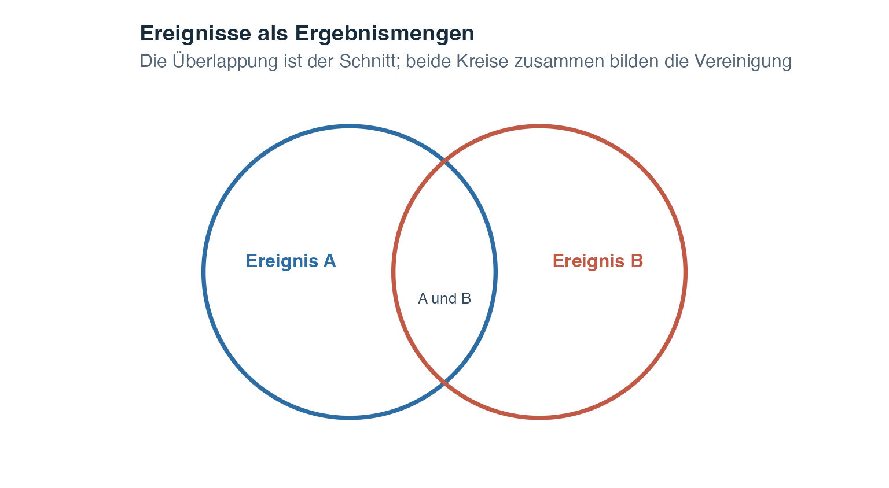
Eine solche Darstellung heisst Venn-Diagramm. Jeder Kreis stellt ein Ereignis dar, und die Überlappung zeigt Ergebnisse, die zu beiden Ereignissen gehören. Die Kreisgrössen dienen hier lediglich als visuelle Orientierung und dürfen nicht als numerische Wahrscheinlichkeiten gelesen werden.
Die nächste Abbildung wendet jede Operation auf denselben Ergebnisraum mit zehn Ergebnissen an. Die kleinen Buchstaben unter einer Zahl zeigen ihre ursprüngliche Ereigniszugehörigkeit. Eine mit «A, D» markierte Kachel gehört beispielsweise sowohl zu \(A\) als auch zu \(D\).
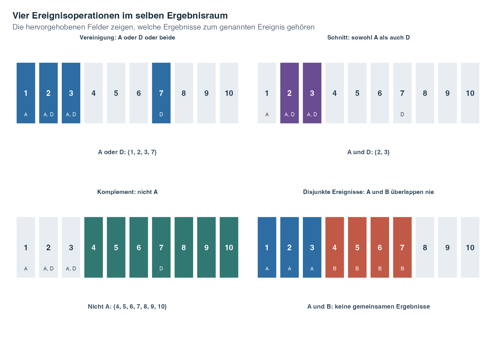
Lies die Teilgrafiken in dieser Reihenfolge:
Diese Mengenoperationen zeigen, welche Ergebnisse ein Ereignis enthält. Als Nächstes berechnen wir die Wahrscheinlichkeit, die diesen Ergebnissen zugeordnet ist.
Die Komplementregel lautet:
\[P(A') = 1 - P(A)\]
Wenn 68% der Studierenden ein Modul bestehen, bestehen es 32% nicht. Die Komplementregel ist besonders nützlich, wenn sich die Wahrscheinlichkeit eines Ereignisses nur schwer direkt, jene seines Gegenteils aber einfach berechnen lässt.
Das Komplement behandelt das Wort «nicht». Nun wenden wir uns Fragen mit «oder» zu, für die wir die Additionsregel benötigen.
Um die Wahrscheinlichkeit dafür zu bestimmen, dass mindestens eines von zwei Ereignissen eintritt, verwenden wir die Additionsregel. Zwei Ereignisse sind einander ausschliessend (disjunkt), wenn sie nicht gleichzeitig eintreten können und ihre Schnittmenge somit leer ist. Für einander ausschliessende Ereignisse gilt:
\[P(A \cup B) = P(A) + P(B)\]
Da keine Überschneidung besteht, ist keine Korrektur nötig. Sind Ereignisse nicht einander ausschliessend, wird die Überschneidung bei einfacher Addition ihrer Wahrscheinlichkeiten doppelt gezählt. Die allgemeine Additionsregel korrigiert dies:
\[P(A \cup B) = P(A) + P(B) - P(A \cap B)\]
Durch Subtraktion von \(P(A \cap B)\) wird die doppelte Zählung der zu beiden Ereignissen gehörenden Ergebnisse entfernt.
In beiden Formeln bezeichnet \(A\cup B\) das Ereignis «\(A\) oder \(B\) oder beide», während \(A\cap B\) die Überlappung «\(A\) und \(B\)» bezeichnet. Die allgemeine Formel ist der sichere Ausgangspunkt. Die kürzere Formel darf erst verwendet werden, nachdem feststeht, dass die Überlappung die Wahrscheinlichkeit 0 besitzt.
Die Additionsregel lässt sich direkt auf mehr als zwei disjunkte Ereignisse erweitern. Wenn \(A_1, A_2, \ldots, A_k\) alle einander ausschliessen, hat ihre Vereinigung die Wahrscheinlichkeit:
\[P(A_1 \cup A_2 \cup \cdots \cup A_k) = P(A_1) + P(A_2) + \cdots + P(A_k)\]
Dies gilt nur, wenn alle Ereignispaare disjunkt sind. Sobald zwei Ereignisse gemeinsame Ergebnisse haben, muss die allgemeine Additionsregel verwendet werden.
Gegenseitiger Ausschluss und Unabhängigkeit beantworten unterschiedliche Fragen. Schliessen sich zwei Ereignisse mit Wahrscheinlichkeiten grösser als null gegenseitig aus, folgt aus dem Eintreten des einen mit Sicherheit, dass das andere nicht eingetreten ist. Dadurch sind die Ereignisse abhängig. Gegenseitiger Ausschluss fragt, ob Ereignisse gemeinsam eintreten können. Unabhängigkeit fragt, ob das Eintreten des einen die Wahrscheinlichkeit des anderen verändert.
Die Additionsregel beantwortet eine «oder»-Frage. Eine «und»-Frage benötigt eine Multiplikation, und eine Frage mit «gegeben, dass» benötigt eine bedingte Wahrscheinlichkeit. Diese beiden Ideen folgen nun.
Die bedingte Wahrscheinlichkeit ist die Wahrscheinlichkeit eines Ereignisses, nachdem wir unsere Betrachtung auf jene Fälle eingeschränkt haben, bei denen ein anderes Ereignis eingetreten ist. Der senkrechte Strich in \(P(A\mid B)\) wird als «gegeben» gelesen. \(P(A\mid B)\) bedeutet somit «die Wahrscheinlichkeit von \(A\), gegeben, dass \(B\) eingetreten ist».
\[P(A \mid B) = \frac{P(A \cap B)}{P(B)}\]
Dabei gilt:
Der Nenner \(P(B)\) ist entscheidend, weil \(B\) zur neuen Bezugsgruppe wird. Innerhalb dieser kleineren Gruppe bezeichnet der Zähler \(P(A\cap B)\) jene Fälle, die zusätzlich zu \(A\) gehören. Die Bedingung \(P(B)>0\) bedeutet lediglich, dass die Bezugsgruppe nicht leer sein darf.
Die Komplementregel funktioniert auch innerhalb einer Bedingung, doch die Bedingung muss gleich bleiben:
\[P(A'\mid B)=1-P(A\mid B).\]
Wenn 60% der Fälle in Gruppe \(B\) zu \(A\) gehören, gehören die verbleibenden 40% derselben Gruppe zu \(A'\). Eine Änderung von \(B\) würde die Bezugsgruppe verändern und damit eine andere Frage beantworten.
Durch Umstellen der Definition ergibt sich die Multiplikationsregel in allgemeiner Form:
\[P(A \cap B) = P(A \mid B) \cdot P(B)\]
Bei drei aufeinanderfolgenden Ereignissen wenden wir dieselbe Überlegung Stufe für Stufe an:
\[P(A \cap B \cap C) = P(A)P(B \mid A)P(C \mid A \cap B).\]
Angenommen, ein geeigneter Archivdatensatz wird mit Wahrscheinlichkeit 0.72 gefunden. Unter den gefundenen Datensätzen beträgt die Wahrscheinlichkeit eines brauchbaren Scans 0.80. Unter den Datensätzen, die gefunden wurden und brauchbar sind, beträgt die Wahrscheinlichkeit einer erfolgreichen Metadatenprüfung 0.85. Die Wahrscheinlichkeit für die vollständige Kette ist \(0.72 \times 0.80 \times 0.85 = 0.4896\). Jede Wahrscheinlichkeit wird innerhalb jener Gruppe interpretiert, die die vorherige Stufe erreicht hat.
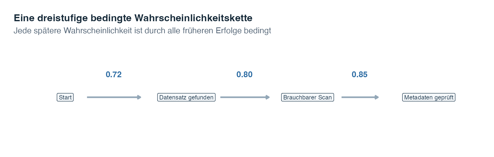
Lies die Pfeile von links nach rechts. Die Multiplikation aller drei Werte folgt einem vollständigen Erfolgspfad. Wenn die letzte Erfolgswahrscheinlichkeit durch \(1-0.85\) ersetzt wird, beschreibt der Ausdruck stattdessen einen Erfolg auf den ersten beiden Stufen und einen Misserfolg auf der dritten.
Zwei Ereignisse sind unabhängig, wenn das Wissen über das Eintreten des einen keine Information darüber liefert, ob das andere eintritt. Die allgemeine Definition lautet:
\[P(A \cap B) = P(A) \cdot P(B)\]
Wenn die betreffenden Bedingungen positive Wahrscheinlichkeit besitzen, bedeutet Unabhängigkeit auch \(P(B\mid A)=P(B)\). In Worten: Die Einschränkung auf die Fälle in \(A\) verändert die Wahrscheinlichkeit von \(B\) nicht.
Die folgende Tabelle erfasst das Format eines Tutorats und ob ein Übungsset eingereicht wurde. Damit lassen sich drei Arten von Wahrscheinlichkeit vergleichen. Eine Randwahrscheinlichkeit verwendet eine Zeilen- oder Spaltensumme und beschreibt ein Ereignis ohne zusätzliche Bedingung. Eine gemeinsame Wahrscheinlichkeit beschreibt zwei gleichzeitig eintretende Ereignisse. Eine bedingte Wahrscheinlichkeit beschränkt den Nenner auf eine Zeilen- oder Spaltengruppe.
| Tutoratsformat | Eingereicht | Nicht eingereicht | Gesamt |
|---|---|---|---|
| Live | 30 | 20 | 50 |
| Aufgezeichnet | 20 | 30 | 50 |
| Gesamt | 50 | 50 | 100 |
Beginne mit der Frage und wähle danach den Nenner. Die Randwahrscheinlichkeit einer Einreichung ist \(50/100=0.50\), weil alle 100 Studierenden die Bezugsgruppe bilden. Die gemeinsame Wahrscheinlichkeit eines Live-Tutorats und einer Einreichung ist \(30/100=0.30\), wiederum bezogen auf alle 100 Studierenden. Die bedingte Wahrscheinlichkeit einer Einreichung gegeben ein Live-Tutorat ist \(30/50=0.60\), weil nun nur die 50 Studierenden im Live-Tutorat die Bezugsgruppe bilden. Bei aufgezeichneten Tutoraten beträgt sie \(20/50=0.40\). Da sich die bedingten Wahrscheinlichkeiten unterscheiden, sind Tutoratsformat und Einreichung in dieser Tabelle nicht unabhängig. Sie sind auch nicht disjunkt, weil 30 Studierende sowohl zum Live- als auch zum Eingereicht-Ereignis gehören.
Die Symbole \(A\subseteq B\) bedeuten, dass jedes Ergebnis in \(A\) auch zu \(B\) gehört. In diesem Fall gilt \(P(A)\leq P(B)\): Ein kleineres Ereignis kann nicht wahrscheinlicher sein als das Ereignis, das es enthält. «Bei einem Datensatz fehlen sowohl Urheber als auch Datum» ist beispielsweise in «Bei einem Datensatz fehlt der Urheber» enthalten. Eine zusätzliche Anforderung kann die Wahrscheinlichkeit nur unverändert lassen oder verkleinern.
| Worte in der Frage | Ereignisnotation | Zuerst zu prüfende Regel |
|---|---|---|
| nicht \(A\) | \(A'\) | Komplement |
| \(A\) oder \(B\) oder beide | \(A\cup B\) | Addition |
| \(A\) und \(B\) | \(A\cap B\) | Multiplikation |
| \(A\), gegeben \(B\) | \(P(A\mid B)\) | Bedingte Wahrscheinlichkeit |
Diese Regeln führen von bekannten Wahrscheinlichkeiten in derselben Richtung wie die Frage zu einer neuen Wahrscheinlichkeit. Manchmal kennen wir jedoch \(P(B\mid A)\) und benötigen die umgekehrte Wahrscheinlichkeit \(P(A\mid B)\). Der Satz von Bayes ermöglicht diese Umkehrung.
Der Satz von Bayes verbindet zwei bedingte Wahrscheinlichkeiten, die in entgegengesetzte Richtungen zeigen. Er ist nützlich, wenn wir \(P(B\mid A)\) kennen, die Frage aber nach \(P(A\mid B)\) verlangt.
\[P(A \mid B) = \frac{P(B \mid A) \cdot P(A)}{P(B \mid A) \cdot P(A) + P(B \mid A') \cdot P(A')}\]
Lies die Formel Stück für Stück:
Der Nenner enthält alle Möglichkeiten, wie \(B\) eintreten kann. Er addiert den Pfad über \(A\) und den Pfad über \(A'\). Diese Addition heisst Satz der totalen Wahrscheinlichkeit. Der Zähler behält nur den Pfad bei, auf dem sowohl \(A\) als auch \(B\) eintreten.
Eine typische Anwendung in Psychologie und Medizin verwendet die Begriffe diagnostischer Tests. Es sei \(A\) = «Störung liegt vor» und \(B\) = «Test ist positiv».
Angenommen, die Prävalenz beträgt 3%, die Sensitivität 90% und die Spezifität 85%. Die Wahrscheinlichkeit des Pfads «Störung vorhanden und positiv» ist \(0.03\times0.90=0.027\). Die Wahrscheinlichkeit des Pfads «Störung nicht vorhanden und positiv» ist \(0.97\times0.15=0.1455\). Damit gilt
\[P(A\mid B)=\frac{0.027}{0.027+0.1455}\approx0.157.\]
Unter Personen mit einem positiven Ergebnis ist unter diesen Annahmen bei ungefähr 15.7% eine Störung zu erwarten. Das Ergebnis liegt weit unter der Sensitivität von 90%, weil die Störung selten ist und auch die viel grössere Gruppe ohne Störung einige positive Ergebnisse hervorbringt.
Mit 10 000 hypothetischen Personen wird dieselbe Berechnung anschaulich. Die folgenden Häufigkeiten sind Erwartungswerte unter den angegebenen Raten und keine beobachteten klinischen Daten.
| Zustand | Positives Ergebnis | Negatives Ergebnis | Gesamt |
|---|---|---|---|
| Vorhanden | 270 | 30 | 300 |
| Nicht vorhanden | 1 455 | 8 245 | 9 700 |
| Gesamt | 1 725 | 8 275 | 10 000 |
Die Tabelle drückt dieselbe Berechnung als Häufigkeiten aus. Von 10 000 hypothetischen Personen haben erwartungsgemäss 300 die Störung, und \(0.90\times300=270\) davon erhalten erwartungsgemäss ein positives Ergebnis. Unter den 9 700 Personen ohne Störung erhalten erwartungsgemäss \(0.15\times9700=1455\) ein positives Ergebnis. Insgesamt entstehen daher \(270+1455=1725\) positive Ergebnisse und \(P(A\mid B)=270/1725\approx0.1565\).
Die Tabelle enthält alle vier Häufigkeiten. Der Satz von Bayes lässt sich jedoch leichter behalten, wenn wir zusätzlich verfolgen, wie diese Häufigkeiten entstanden sind. Das nächste Diagramm macht die Pfade im Nenner sichtbar.

Beginne beim Kasten ganz links. Das erste Pfeilpaar verwendet die Prävalenz, um die 10 000 Personen in 300 Personen mit Störung und 9 700 Personen ohne Störung aufzuteilen. Die nächsten Pfeile wenden die Sensitivität innerhalb der Gruppe mit Störung und die Spezifität innerhalb der Gruppe ohne Störung an. Jede Prozentangabe wird somit innerhalb jener Gruppe gelesen, die den betreffenden Ast erreicht hat, und nicht als Anteil aller 10 000 Personen.
Verfolge nun nur die beiden orangefarbenen Kästen mit positivem Ergebnis. Sie enthalten 270 richtig positive und 1 455 falsch positive Ergebnisse. Beide Pfade müssen in den Nenner eingehen, weil beide zur beobachteten Information führen, nämlich zu einem positiven Ergebnis. Der Zähler behält die 270 Personen, die über den Pfad mit vorhandener Störung zu einem positiven Ergebnis gelangten. Der abschliessende Vergleich lautet daher \(270/(270+1455)=270/1725\approx0.157\).
Die Kästen zeigen, weshalb eine hohe Sensitivität nach einem positiven Ergebnis keine hohe Wahrscheinlichkeit für das Vorliegen der Störung garantiert. Sie beschreiben kein reales Screeningprogramm und belegen nicht, dass diese Raten für eine bestimmte Grundgesamtheit gelten. Ändern sich Prävalenz, Sensitivität oder Spezifität, verändern sich auch die Häufigkeiten auf den Ästen und die abschliessende Wahrscheinlichkeit.
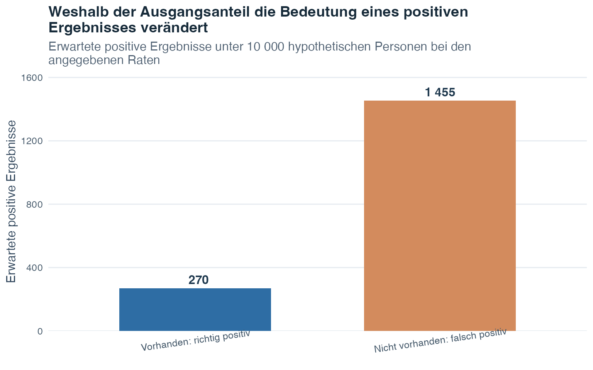
Die Säule der falsch positiven Ergebnisse ist nicht deshalb höher, weil die Sensitivität niedrig wäre, sondern weil die Gruppe ohne Störung sehr viel grösser ist. Gemeinsam bilden die beiden Säulen den Nenner des Satzes von Bayes: alle positiven Ergebnisse, unabhängig davon, auf welchem Pfad sie entstanden sind.
Die Basisrate ist wichtig: Hier ist die Prävalenz die Ausgangswahrscheinlichkeit oder Basisrate. Die Sensitivität allein kann die Frage «Wie wahrscheinlich ist die Störung nach einem positiven Ergebnis?» nicht beantworten. Prävalenz, Sensitivität und Spezifität müssen gemeinsam verwendet werden.
Bisher waren Ereignisse Gruppen wie «positives Ergebnis» oder «hohe Prüfungsangst». Nun gehen wir von Ereignisbezeichnungen zu numerischen Ergebnissen über. Dafür brauchen wir die Idee einer Zufallsvariablen.
In der Wahrscheinlichkeitsrechnung ordnet eine Zufallsvariable jedem möglichen Ergebnis eines Zufallsexperiments eine Zahl zu. Bei einem Münzwurf könnten wir Kopf als 1 und Zahl als 0 codieren. Bei einem Würfelwurf kann die Zahl auf der Oberseite den Wert der Zufallsvariablen bilden. Wir verwenden den Grossbuchstaben \(X\) für die Zufallsvariable und den Kleinbuchstaben \(x\) für einen möglichen numerischen Wert, den sie annehmen kann.
Diskrete Zufallsvariablen können nur getrennte, abzählbare Werte annehmen. Die Anzahl Erfolge bei mehreren Versuchen ist diskret: Sie kann 0, 1, 2, 3 und so weiter betragen, aber nicht 2.7. Jeder mögliche Wert kann eine eigene positive Wahrscheinlichkeit haben, und alle diese Wahrscheinlichkeiten summieren sich zu 1.
Stetige Zufallsvariablen können grundsätzlich jeden Wert innerhalb eines Bereichs annehmen, einschliesslich Werten zwischen zwei angezeigten Zahlen. Ihre Wahrscheinlichkeiten werden Intervallen und nicht einzelnen exakten Punkten zugeordnet. Nach den diskreten Variablen kommen wir auf diese Unterscheidung zurück.
Jede Zufallsvariable besitzt eine Wahrscheinlichkeitsverteilung. Sie ist eine idealisierte Beschreibung davon, welche Werte möglich sind und wie sich die Wahrscheinlichkeit auf sie verteilt. Bei einer diskreten Variablen listen wir Wahrscheinlichkeiten für einzelne Werte auf. Bei einer stetigen Variablen verwenden wir eine Dichtekurve und berechnen Flächen.
Wir beginnen mit dem diskreten Fall, weil seine Wahrscheinlichkeiten Wert für Wert dargestellt werden können.
Für eine diskrete Zufallsvariable \(X\) sind drei Grössen besonders wichtig.
Der Erwartungswert oder Mittelwert von \(X\), geschrieben als \(E(X)\), ist der mit den Wahrscheinlichkeiten gewichtete Mittelwert aller möglichen Werte:
\[E(X) = \sum_{x} x \cdot P(X = x)\]
Lies die Formel so:
Der Erwartungswert beschreibt das langfristige durchschnittliche Ergebnis über viele Wiederholungen des Experiments. Er muss kein Wert sein, den \(X\) tatsächlich annehmen kann: Bei einem fairen Würfel gilt \(E(X) = 3.5\), obwohl der Würfel nie 3.5 zeigt.
Die Varianz von \(X\) misst, wie stark die Verteilung um ihren Erwartungswert streut:
\[\text{Var}(X) = \sum_{x} (x - E(X))^2 \cdot P(X = x)\]
Für jeden möglichen Wert ist \(x-E(X)\) sein Abstand vom Erwartungswert. Durch Quadrieren tragen negative und positive Abstände positiv bei. Die Multiplikation mit \(P(X=x)\) gewichtet Werte stärker, die häufiger auftreten, und \(\sum_x\) addiert die gewichteten quadrierten Abstände. Die Standardabweichung ist \(\text{SD}(X)=\sqrt{\text{Var}(X)}\) und bringt die Streuung wieder in die ursprüngliche Einheit von \(X\).
Eine Wahrscheinlichkeitsfunktion (PMF) ordnet jedem einzelnen Wert einer diskreten Zufallsvariablen eine Wahrscheinlichkeit zu. Eine kumulative Verteilungsfunktion (CDF) addiert dagegen die Wahrscheinlichkeiten bis zu einem ausgewählten Wert. Kumulativ bedeutet, dass die Summe beim Weg von kleineren zu grösseren Werten schrittweise aufgebaut wird. Die CDF wird geschrieben als
\[F(x) = P(X \leq x)\]
Hier ist \(F(x)\) die kumulative Wahrscheinlichkeit bei \(x\), und das Symbol \(\leq\) bedeutet «kleiner oder gleich». Eine CDF kann nicht abnehmen, weil sie bei einem grösseren \(x\) alle früheren Wahrscheinlichkeiten behält und allenfalls weitere hinzufügt.
Betrachte ein neu entwickeltes Beispiel, in dem \(X\) die Anzahl Rückfragen zu einem zufällig ausgewählten Archivfall bezeichnet.
| \(x\) | 0 | 1 | 2 | 4 |
|---|---|---|---|---|
| \(P(X=x)\) | 0.10 | 0.35 | 0.40 | 0.15 |
| \(F(x)=P(X\leq x)\) | 0.10 | 0.45 | 0.85 | 1.00 |
Die Zeile der PMF enthält nichtnegative Wahrscheinlichkeiten, die sich zu 1 summieren. Die CDF-Zeile wird von links nach rechts aufgebaut. Beispielsweise gilt \(F(2)=0.10+0.35+0.40=0.85\). Der Erwartungswert lautet
\[E(X)=0(0.10)+1(0.35)+2(0.40)+4(0.15)=1.75.\]
Für eine kürzere Varianzberechnung bestimmen wir zuerst den erwarteten quadrierten Wert:
\[E(X^2)=0^2(0.10)+1^2(0.35)+2^2(0.40)+4^2(0.15)=4.35.\]
Danach verwenden wir \(\operatorname{Var}(X)=E(X^2)-[E(X)]^2\). Das ergibt \(4.35-1.75^2=1.2875\). Diese Abkürzung ist algebraisch gleichwertig mit der obigen Varianzformel.
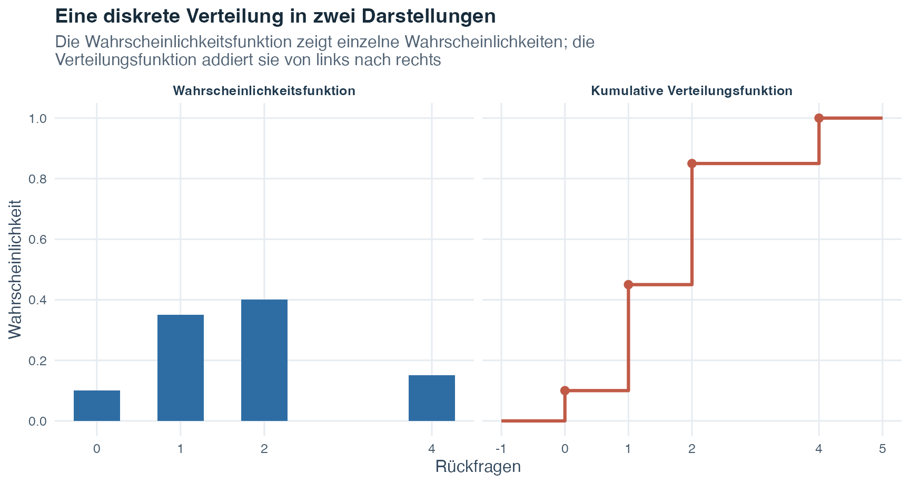
Vergleiche die Höhe bei \(x=2\) in beiden Teilgrafiken. Die PMF-Höhe 0.40 ist die Wahrscheinlichkeit für genau zwei Rückfragen. Die CDF-Höhe 0.85 ist dagegen die Wahrscheinlichkeit für höchstens zwei Rückfragen. Eine CDF kann nie abnehmen, weil sie die zuvor angesammelte Wahrscheinlichkeit beibehält.
Die nächste Verteilung ist ein besonderes diskretes Modell für wiederholte Versuche mit genau zwei möglichen Ergebnissen pro Versuch.
Die Binomialverteilung modelliert eine Anzahl Erfolge über wiederholte Versuche. Ein Versuch ist eine Wiederholung des Vorgangs, zum Beispiel ein einzelner Münzwurf oder eine beantwortete Frage. «Erfolg» bezeichnet hier einfach das Ergebnis, das wir zählen möchten, und muss nichts Wünschenswertes sein.
Die Notation \(X\sim B(n,\pi)\) wird gelesen als «\(X\) folgt einer Binomialverteilung mit den Parametern \(n\) und \(\pi\)». Dabei gilt:
Die Wahrscheinlichkeit für genau \(x\) Erfolge in \(n\) Versuchen beträgt:
\[P(X = x) = \binom{n}{x} \pi^x (1-\pi)^{n-x}\]
Die Formel verbindet drei Bestandteile:
Der Koeffizient ist \(\binom{n}{x}=\dfrac{n!}{x!(n-x)!}\). Das Ausrufezeichen bezeichnet eine Fakultät: \(n!=n\cdot(n-1)\cdots2\cdot1\), und \(0!=1\). Du musst nicht jede mögliche Reihenfolge von Hand auflisten, weil der Koeffizient sie für dich zählt.
Sei \(X\sim B(4,0.25)\). Für genau zwei Erfolge gilt
\[P(X=2)=\binom{4}{2}(0.25)^2(0.75)^2=6(0.0625)(0.5625)\approx0.211.\]
Das Symbol \(\approx\) zeigt, dass das dargestellte Ergebnis gerundet ist. Für «mindestens einen Erfolg» ist das Komplement kürzer als die Addition von vier einzelnen Wahrscheinlichkeiten:
\[P(X\geq1)=1-P(X=0)=1-(0.75)^4\approx0.684.\]
Das Ereignis «keine Erfolge» ist das Komplement von «mindestens ein Erfolg».
Erwartungswert und Varianz einer binomialverteilten Zufallsvariablen lauten:
\[E(X) = n\pi \qquad \text{Var}(X) = n\pi(1-\pi)\]
Ein einzelner Versuch hat zwei Kategorien, Erfolg und Misserfolg. Die binomiale Zufallsvariable ist die Anzahl über alle Versuche, weshalb sie die Werte \(0,1,\ldots,n\) annehmen kann. Bei zwei Münzwürfen kann die Anzahl Kopf zum Beispiel 0, 1 oder 2 betragen.
Prüfe vor der Verwendung des Binomialmodells vier Bedingungen: (1) Die Anzahl Versuche \(n\) steht im Voraus fest; (2) jeder Versuch wird genau einem von zwei Ergebnissen zugeordnet, Erfolg oder Misserfolg; (3) die Erfolgswahrscheinlichkeit \(\pi\) bleibt von Versuch zu Versuch gleich; und (4) die Versuche sind unabhängig, das Ergebnis eines Versuchs verändert also die Erfolgswahrscheinlichkeit eines anderen Versuchs nicht.
Eine verbreitete Warnung betrifft die Auswahl aus einer kleinen, begrenzten Grundgesamtheit. Ziehen ohne Zurücklegen bedeutet, dass eine einmal ausgewählte Einheit nicht erneut ausgewählt werden kann. Jede Auswahl verändert dadurch die verbleibenden Einheiten. Die Erfolgswahrscheinlichkeit kann sich ändern, und die Auswahlen sind nicht mehr unabhängig. Das Binomialmodell darf nur verwendet werden, wenn diese Veränderungen für die modellierte Situation vernachlässigbar sind.
| Formulierung der Frage | Wahrscheinlichkeitsaussage | Effiziente Berechnung |
|---|---|---|
| Genau \(k\) | \(P(X=k)\) | Eine binomiale Einzelwahrscheinlichkeit |
| Höchstens \(k\) | \(P(X\leq k)\) | Kumulative Summe von 0 bis \(k\) |
| Weniger als \(k\) | \(P(X<k)\) | \(P(X\leq k-1)\) |
| Mindestens \(k\) | \(P(X\geq k)\) | \(1-P(X\leq k-1)\) |
| Mehr als \(k\) | \(P(X>k)\) | \(1-P(X\leq k)\) |
Lies die fünf Zeilen, indem du sowohl die Seite der Grenze als auch die Einbeziehung der Grenze prüfst. Genau \(k\) wählt nur die einzelne Anzahl \(k\). Höchstens \(k\) ist die untere Seite einschliesslich \(k\), weshalb die kumulative Summe von 0 bis \(k\) reicht. Weniger als \(k\) ist die untere Seite ohne \(k\), weshalb die Summe bei \(k-1\) endet. Mindestens \(k\) ist die obere Seite einschliesslich \(k\); ihr Komplement enthält nur Werte unter \(k\), also 0 bis \(k-1\). Mehr als \(k\) ist die obere Seite ohne \(k\); ihr Komplement enthält alle Werte bis einschliesslich \(k\). Diese sprachlichen Unterschiede entscheiden, ob der Grenzwert zur Wahrscheinlichkeit gehört.
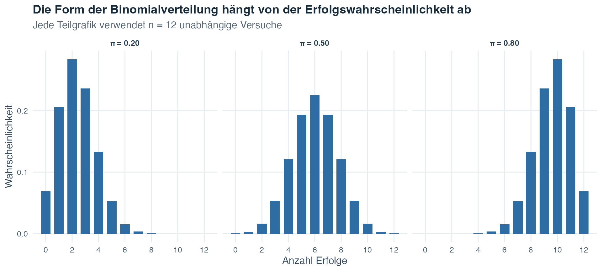
Alle drei Teilgrafiken verwenden \(n=12\), weshalb jede horizontale Achse von 0 bis 12 Erfolge reicht. Bei \(\pi=0.20\) sind kleine Anzahlen am wahrscheinlichsten, und die Säulen laufen zu grösseren Anzahlen hin aus. Bei \(\pi=0.50\) ist die Verteilung um 6 symmetrisch. Bei \(\pi=0.80\) sind grosse Anzahlen am wahrscheinlichsten. Die erwartete Anzahl \(n\pi\) verschiebt sich mit steigender Erfolgswahrscheinlichkeit von 2.4 über 6 zu 9.6.
Die Binomialverteilung beschreibt getrennte Anzahlen. Nun wechseln wir zu stetigen Werten, bei denen Wahrscheinlichkeit durch Flächen statt durch einzelne Säulen dargestellt wird.
Stetige Zufallsvariablen können jeden Wert innerhalb eines Bereichs annehmen. Weil es unendlich viele mögliche Werte gibt, weisen wir einem einzelnen exakten Punkt keine positive Wahrscheinlichkeit zu. Stattdessen zeichnet eine Dichtefunktion \(f(x)\) eine Kurve, und Wahrscheinlichkeit wird durch die Fläche unter dieser Kurve über einem Intervall dargestellt.
| Verteilungsobjekt | Diskrete Variable | Stetige Variable |
|---|---|---|
| Grundfunktion | PMF \(p(x)=P(X=x)\) | Dichte \(f(x)\) |
| Wahrscheinlichkeit bei einem exakten Wert | Kann positiv sein | \(P(X=x)=0\) |
| Intervallwahrscheinlichkeit | Summe der enthaltenen Einzelwahrscheinlichkeiten | Fläche \(\int_a^b f(x)\,dx\) |
| Gesamtwahrscheinlichkeit | \(\sum_x p(x)=1\) | \(\int_{-\infty}^{\infty} f(x)\,dx=1\) |
| CDF | \(F(x)=\sum_{t\leq x}p(t)\) | \(F(x)=\int_{-\infty}^{x}f(t)\,dt\) |
Lies die beiden Spalten nebeneinander. In der diskreten Spalte liegt Wahrscheinlichkeit auf getrennten möglichen Werten und kann addiert werden. In der stetigen Spalte verteilt sich Wahrscheinlichkeit über ein Intervall und muss als Fläche gelesen werden. Beide Spalten erfüllen weiterhin dieselben zwei Bedingungen: Die Gesamtwahrscheinlichkeit ist 1, und die CDF hält fest, wie viel Wahrscheinlichkeit sich bis zu einer gewählten Grenze angesammelt hat.
Das Integralzeichen \(\int\) bedeutet «Fläche ansammeln». In \(\int_a^b f(x)\,dx\) sind \(a\) und \(b\) die untere und obere Intervallgrenze, \(f(x)\) gibt die Kurvenhöhe an und \(dx\) zeigt, dass die Fläche über Werte von \(x\) angesammelt wird. Der Ausdruck \(\int_{-\infty}^{\infty}f(x)\,dx=1\) besagt, dass die Gesamtfläche unter einer Dichtekurve 1 ist. \(-\infty\) und \(\infty\) bedeuten hier, dass der gesamte mögliche Wertebereich einbezogen wird.
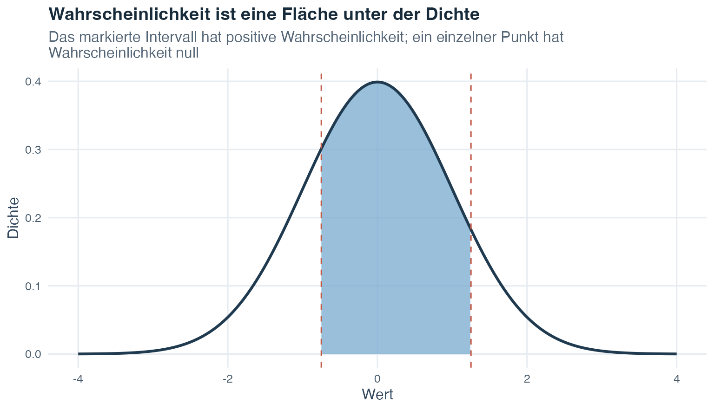
Die Kurvenhöhe zeigt, wo Werte dichter konzentriert sind, ist allein aber noch keine Wahrscheinlichkeit. Die markierte Fläche ist die Wahrscheinlichkeit. Eine Veränderung einer Intervallgrenze verändert die Fläche. Ob ein einzelner exakter Endpunkt ein- oder ausgeschlossen wird, verändert eine stetige Wahrscheinlichkeit nicht, weil ein einzelner Punkt die Wahrscheinlichkeit 0 besitzt.
Bei einer stetigen Verteilung bezeichnet \(\mu\) (Mu) den Erwartungswert und \(\sigma^2\) (Sigma zum Quadrat) die Varianz. Die CDF \(F(x)=P(X\leq x)\) gibt die Fläche links von \(x\) an. Ein Quantil kehrt diese Frage um: Es beginnt mit einem kumulativen Anteil wie 0.99 und sucht die Grenze, links von der dieser Flächenanteil liegt.
Erwartungswert und Varianz verwenden dieselben Ideen wie bei einer diskreten Variablen. Eine stetige Dichte benötigt aber Flächen statt einzelner Wahrscheinlichkeitsmassen:
\[E(X)=\int_{-\infty}^{\infty}x f(x)\,dx\]
\[\operatorname{Var}(X)=\int_{-\infty}^{\infty}[x-E(X)]^2 f(x)\,dx.\]
In der ersten Formel wird jeder mögliche Wert \(x\) durch die Dichte in seiner Umgebung gewichtet. In der zweiten wird jeder quadrierte Abstand vom Erwartungswert auf dieselbe Weise gewichtet. Die Integrale verbinden diese gewichteten Beiträge über den gesamten Wertebereich der Variablen.
Die Normalverteilung ist das wichtigste stetige Wahrscheinlichkeitsmodell, das wir hier verwenden. Sie ist symmetrisch, besitzt einen Gipfel und hat die bekannte Glockenform. Die Notation \(X\sim N(\mu,\sigma^2)\) bedeutet, dass \(X\) einer Normalverteilung mit Erwartungswert \(\mu\) und Varianz \(\sigma^2\) folgt.
Ihre Dichtefunktion lautet
\[f(x) = \frac{1}{\sigma\sqrt{2\pi}} \exp\!\left(-\frac{(x - \mu)^2}{2\sigma^2}\right).\]
Du musst diese Dichte hier nicht von Hand berechnen, aber jedes Symbol hat eine Aufgabe. Der Wert \(x\) ist der Punkt auf der horizontalen Skala, \(\mu\) legt die Mitte fest und \(\sigma\) die Streuung. Der quadrierte Abstand \((x-\mu)^2\) lässt die Kurve mit wachsender Entfernung von der Mitte abfallen. Der Ausdruck \(\exp(\cdot)\) ist eine Exponentialfunktion, welche die glatte Glockenform erzeugt. In dieser Formel ist \(\pi\) die mathematische Konstante mit einem ungefähren Wert von 3.1416. Sie ist nicht die binomiale Erfolgswahrscheinlichkeit, für die zuvor derselbe griechische Buchstabe verwendet wurde.
Eine Normalverteilung ist ein Modell: Sie ist eine idealisierte Beschreibung und keine Behauptung, dass jeder reale Datensatz vollkommen glockenförmig ist. Frage vor ihrer Verwendung, ob eine symmetrische Kurve mit einem Gipfel die modellierte Grösse angemessen beschreibt.
Normalverteilungen können unterschiedliche Mitten und Streuungen besitzen. Die z-Transformation bringt sie auf eine gemeinsame Referenzskala:
\[z = \frac{x - \mu}{\sigma}.\]
Hier ist \(x\) der ursprüngliche Wert, \(\mu\) der Mittelwert der Grundgesamtheit und \(\sigma\) die Standardabweichung der Grundgesamtheit. Durch das Abziehen von \(\mu\) wird zuerst der Abstand des Werts vom Mittelwert berechnet. Die Division durch \(\sigma\) drückt diesen Abstand in Standardabweichungseinheiten aus. Die entstehende Zahl \(z\) heisst z-Wert.
Thema 1 standardisierte Werte innerhalb einer beobachteten Stichprobe mit \(z=(x-\bar{x})/s\). Hier standardisieren wir ein Wahrscheinlichkeitsmodell für eine Grundgesamtheit mit \(z=(x-\mu)/\sigma\). Der Zweck ist in beiden Fällen gleich: Ein Wert wird als Abstand von seinem Mittelwert in Standardabweichungseinheiten ausgedrückt. Die Standardisierung verändert die Mitte und die Einheit, nicht aber die grundlegende Form der Verteilung.
Ein z-Wert von 0 liegt genau beim Mittelwert. Ein positiver z-Wert liegt darüber, ein negativer darunter. Im veranschaulichenden Modell mit \(\mu=100\) und \(\sigma=15\) hat ein Wert von 130 beispielsweise
\[z=\frac{130-100}{15}=2,\]
und liegt damit zwei Standardabweichungen über dem Mittelwert.
Nach der z-Transformation folgt eine normalverteilte Variable der Standardnormalverteilung, geschrieben als \(Z\sim N(0,1)\). Der Grossbuchstabe \(Z\) bezeichnet die standardisierte Zufallsvariable, 0 ihren Mittelwert und 1 ihre Varianz und somit auch ihre Standardabweichung. Eine Standardnormalverteilungstabelle gibt die Fläche links von ausgewählten z-Werten an. Nach der Standardisierung lässt sich dieselbe Referenztabelle für jede Normalverteilung verwenden.
Da Werte auf jeder Normalverteilungsskala nun in z-Werte umgerechnet werden können, können wir vier wiederkehrende Arten von Normalverteilungsfragen lösen.
Bestimme vor jeder Berechnung, ob die Frage eine Grenze vorgibt und nach einer Fläche fragt oder eine Fläche vorgibt und nach einer Grenze fragt. Die vier Kombinationen unten decken die wiederkehrenden Fragetypen ab. Wir verwenden das beispielhafte Modell \(X\sim N(100,15^2)\) mit \(\mu=100\), \(\sigma=15\) und \(\sigma^2=225\).
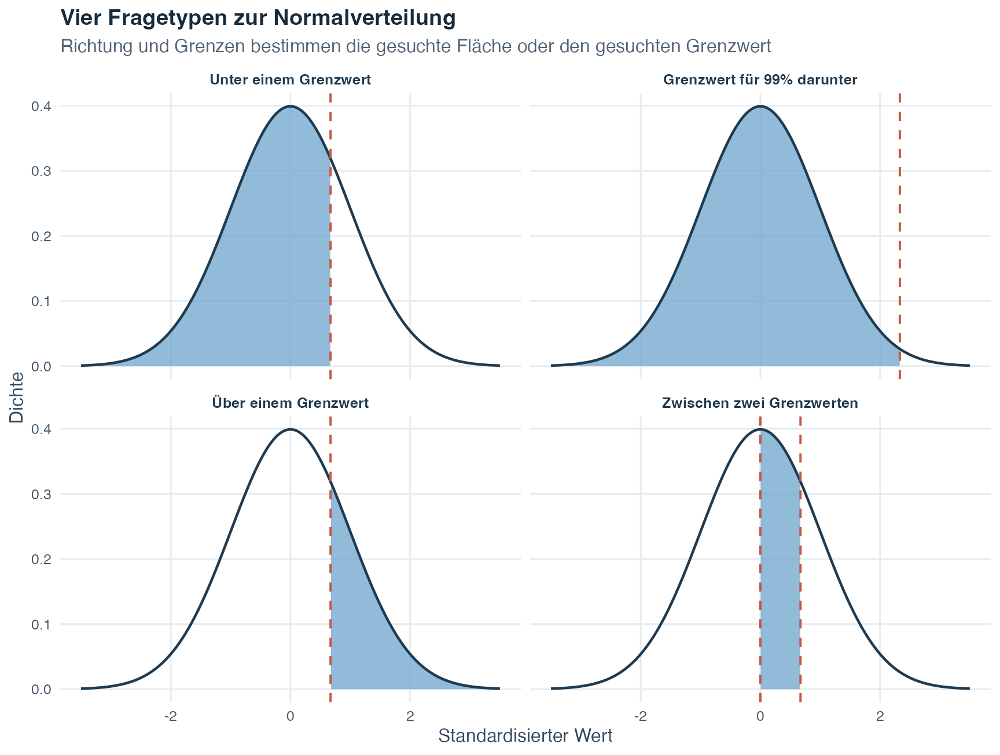
Die Abbildung folgt derselben Reihenfolge wie die vier Erklärungen. In der ersten und dritten Teilgrafik teilt eine bekannte Grenze die Kurve. In der vierten schliessen zwei Grenzen die gesuchte Fläche ein. Die zweite Teilgrafik kehrt die übliche Richtung um: Die Fläche 0.99 ist bekannt, und die Grenze ist die unbekannte Grösse. Wenn du vor der Berechnung auf den gesuchten Bereich zeigst, vermeidest du leichter Verwechslungen zwischen linker und rechter Verteilungsseite.
Bisher beschrieb das Normalmodell Werte innerhalb einer Grundgesamtheit. Statistische Forschung beobachtet normalerweise nur eine Stichprobe aus dieser Grundgesamtheit. Im nächsten Abschnitt fragen wir, was geschieht, wenn die Stichprobenziehung selbst wiederholt wird.
Die Grundgesamtheit ist die vollständige Gruppe von Einheiten, auf die sich die Forschungsfrage bezieht. Eine Einheit kann eine Person, ein Datensatz, eine Schule oder ein anderer untersuchter Gegenstand sein. Eine Stichprobe ist die kleinere Gruppe, die tatsächlich beobachtet wird. Wir verwenden eine Stichprobe, weil die Messung jeder Einheit der Grundgesamtheit oft nicht praktikabel ist.
Bei einer einfachen Zufallsstichprobe fester Grösse besitzt jede mögliche Stichprobe dieser Grösse dieselbe Auswahlwahrscheinlichkeit. Dadurch hat jede Einheit der Grundgesamtheit dieselbe Chance, einbezogen zu werden. Diese zufällige Auswahlregel ist wichtig, weil sie das, was wir in der Stichprobe beobachten, mit der Grundgesamtheit verbindet, die wir beschreiben möchten.
Ein numerisches Merkmal einer Grundgesamtheit heisst Parameter. Ein Parameter ist für diese Grundgesamtheit fest, aber normalerweise unbekannt. Ein aus der beobachteten Stichprobe berechnetes numerisches Merkmal heisst Statistik. Eine Statistik kann die Stichprobe beschreiben und zugleich als Schätzer dienen, also als stichprobenbasierte Grösse zur Schätzung eines unbekannten Parameters der Grundgesamtheit.
| Grösse | Parameter der Grundgesamtheit | Stichprobenstatistik zur Schätzung |
|---|---|---|
| Mittelwert | \(\mu\) | \(\bar{x}\) |
| Varianz | \(\sigma^2\) | \(s^2\) |
Die griechischen Symbole \(\mu\) und \(\sigma^2\) beziehen sich auf die Grundgesamtheit. Die Symbole \(\bar{x}\) und \(s^2\) beziehen sich auf eine beobachtete Stichprobe. Diese Symbole auseinanderzuhalten erinnert uns daran, welche Grössen aus den Daten bekannt sind und welche weiterhin unbekannte Zielgrössen der Grundgesamtheit bilden.
Stell dir nun vor, dasselbe Zufallsstichprobenverfahren viele Male zu wiederholen. Ziehe jedes Mal eine neue Stichprobe der Grösse \(n\) und berechne ihren Mittelwert. Die Mittelwerte unterscheiden sich, weil die Stichproben unterschiedliche Einheiten enthalten. Die Wahrscheinlichkeitsverteilung all dieser möglichen Mittelwerte ist die Stichprobenverteilung des Mittelwerts. Sie beschreibt theoretisch, wie der Stichprobenmittelwert über wiederholte Zufallsstichproben variiert.
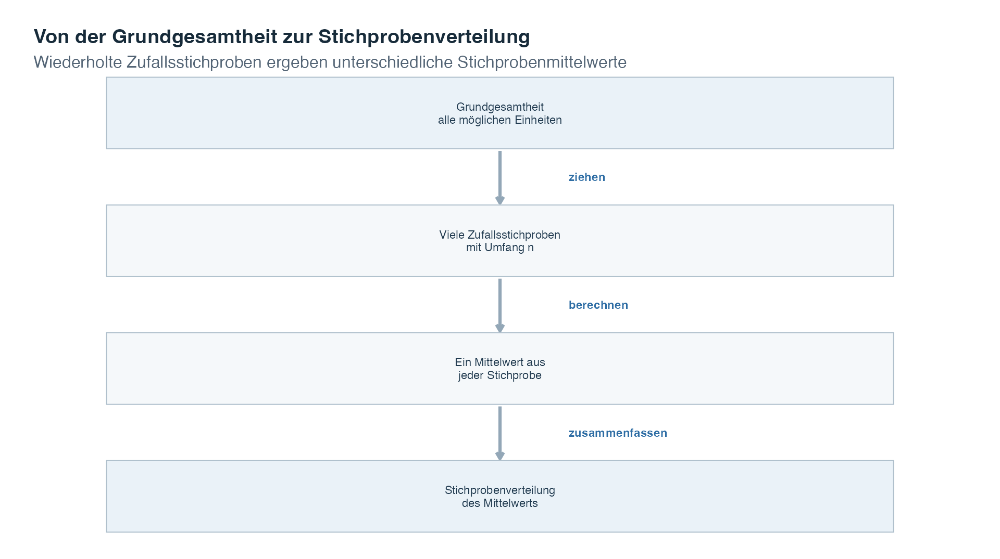
Lies die Abbildung von oben nach unten. Die Grundgesamtheit ist die Quelle. Wiederholte Zufallsstichproben werden mit derselben Stichprobengrösse und Auswahlregel gezogen. Aus jeder Stichprobe wird ein Mittelwert berechnet. Die Sammlung dieser möglichen Mittelwerte ergibt die Stichprobenverteilung.
Drei verwandte Verteilungen müssen auseinandergehalten werden:
| Verteilung | Was ihre Werte darstellen | Beispiel |
|---|---|---|
| Verteilung der Grundgesamtheit | Werte der Variablen über alle Einheiten der Grundgesamtheit | Der Wert jeder Person in der Grundgesamtheit |
| Verteilung einer Stichprobe | Beobachtete Werte in einer ausgewählten Stichprobe | Die Werte der einmal ausgewählten Personen |
| Stichprobenverteilung einer Statistik | Eine Statistik aus jeder möglichen wiederholten Stichprobe | Der Mittelwert aus jeder wiederholten Stichprobe |
Das Wort Stichproben in «Stichprobenverteilung» bezieht sich auf wiederholte Stichproben und nicht auf die Beobachtungen innerhalb einer einzelnen Stichprobe. Auch andere Statistiken wie Median oder Varianz können Stichprobenverteilungen besitzen. Dieses Thema konzentriert sich auf den Stichprobenmittelwert.
Zwei zentrale Eigenschaften der Stichprobenverteilung des Mittelwerts sind:
\[E(\bar{X}) = \mu, \qquad \operatorname{Var}(\bar{X})=\frac{\sigma^2}{n}, \qquad \text{SD}(\bar{X}) = \frac{\sigma}{\sqrt{n}}.\]
Der Ausdruck mit dem Grossbuchstaben \(\bar{X}\) bezeichnet den Stichprobenmittelwert, bevor eine bestimmte Stichprobe gezogen wurde, weshalb er von Stichprobe zu Stichprobe variieren kann. Der beobachtete Wert aus einer konkreten Stichprobe wird als \(\bar{x}\) geschrieben. Die erste Formel besagt, dass die Stichprobenverteilung beim Mittelwert der Grundgesamtheit \(\mu\) zentriert ist. Die zweite gibt ihre Varianz an und die dritte ihre Standardabweichung. Diese Standardabweichung heisst Standardfehler des Mittelwerts.
Eine Formel für Zufallsstichproben ist nur nützlich, wenn das Auswahlverfahren die interessierende Grundgesamtheit erreichen kann. Die Zielpopulation ist die vollständige Gruppe, die in der Forschungsfrage genannt wird. Der Auswahlrahmen ist die Liste oder das praktische Verfahren, mit dem potenzielle Teilnehmende erreicht werden. Die realisierte Stichprobe ist die Gruppe, die schliesslich brauchbare Daten liefert. Diese drei Gruppen können sich unterscheiden.
Wenn manche Mitglieder der Zielpopulation nicht im Auswahlrahmen vorkommen können, liegt eine Unterabdeckung vor. Wenn sich antwortende Personen systematisch von nicht antwortenden Personen unterscheiden, kann eine Verzerrung durch Nichtteilnahme entstehen. Verzerrung bedeutet hier eine systematische Tendenz eines Schätzers, sein Ziel in der Grundgesamtheit in eine bestimmte Richtung zu verfehlen. Auch eine sehr grosse Stichprobe kann verzerrt sein, wenn sie wiederholt aus dem falschen Rahmen gezogen wird oder von selektiver Teilnahme abhängt.
Die folgende Lehrsimulation macht den Unterschied sichtbar. Sie erzeugt eine Zielpopulation von 10 000 Interessenwerten. Bei einer Zufallsstichprobe hat jede Einheit der Grundgesamtheit dieselbe Auswahlchance. Bei einer freiwilligen Teilnahme antworten Einheiten mit höherem Interesse dagegen eher. Beide Stichproben enthalten 4373 Einheiten. Der Vergleich verändert somit das Auswahlverfahren und nicht die Stichprobengrösse.
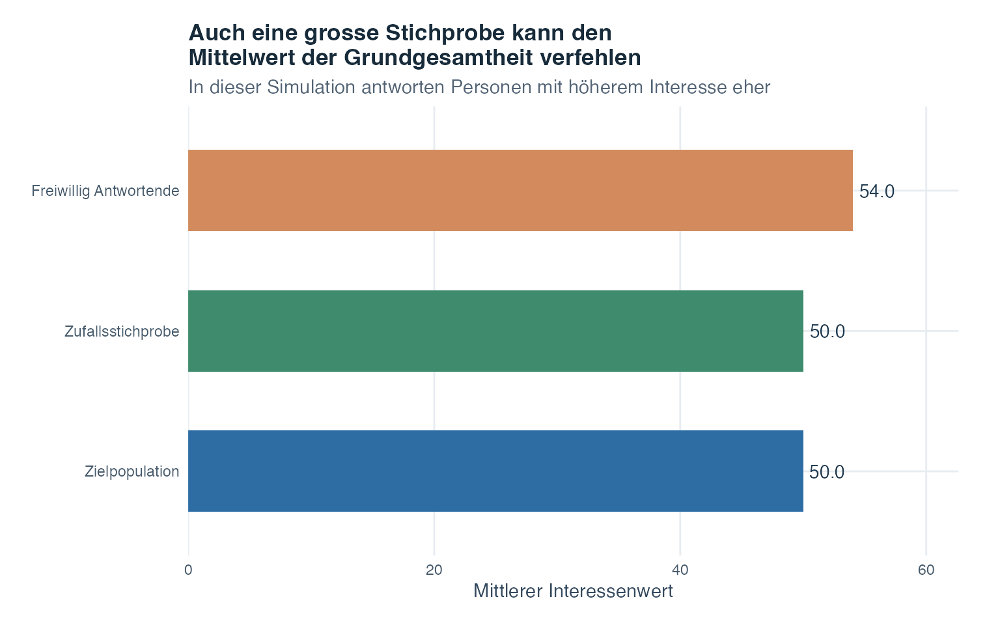
Der Mittelwert der Zielpopulation ist 50. Die gleich grosse Zufallsstichprobe hat den Mittelwert 50, die freiwillig Antwortenden den Mittelwert 54. Der Unterschied der Zufallsstichprobe ist gewöhnliche Zufallsvariation. Der Mittelwert der Antwortenden liegt systematisch höher, weil Einheiten mit hohem Interesse häufiger antworten. Mehr Antwortende aus demselben selektiven Prozess würden diesen Mittelwert stabiler machen, aber nicht repräsentativ für die Zielpopulation.
Damit trennen wir zwei Fragen. Präzision fragt, wie stark ein Schätzwert über wiederholte Stichproben variieren würde. Repräsentativität fragt, ob das Auswahlverfahren erlaubt, mit dem Schätzwert die beabsichtigte Grundgesamtheit zu beschreiben. Nun untersuchen wir die Präzision mithilfe des Standardfehlers.
Der Standardfehler des Mittelwerts beschreibt, wie stark Stichprobenmittelwerte über wiederholte Zufallsstichproben derselben Grösse variieren. Ein kleinerer Standardfehler bedeutet, dass die möglichen Stichprobenmittelwerte enger um den Mittelwert der Grundgesamtheit konzentriert sind.
\[\text{SE} = \frac{\sigma}{\sqrt{n}}\]
In der Formel ist \(\sigma\) die Standardabweichung der Grundgesamtheit, \(n\) die Anzahl Beobachtungen in jeder Stichprobe und \(\sqrt{n}\) die Quadratwurzel der Stichprobengrösse. Normalerweise ist \(\sigma\) unbekannt. Wir setzen dann die Stichprobenstandardabweichung \(s\) an ihrer Stelle ein:
\[\widehat{\text{SE}}=\frac{s}{\sqrt{n}}.\]
Das Dach über \(\widehat{\text{SE}}\) kennzeichnet einen Schätzwert. Diese Ersetzung heisst Plug-in-Schätzung, weil der bekannte Stichprobenwert \(s\) an jener Stelle in die Formel eingesetzt wird, an der sonst der unbekannte Populationswert \(\sigma\) stünde.
Zwei Folgen ergeben sich direkt aus der Formel:
Die Form der Stichprobenverteilung hängt zuerst von der Grundgesamtheit ab. Wenn die Grundgesamtheit selbst normalverteilt ist, ist die Stichprobenverteilung von \(\bar{X}\) bei jeder positiven Stichprobengrösse \(n\) normalverteilt:
\[\bar{X}\sim N\!\left(\mu,\frac{\sigma^2}{n}\right).\]
Wenn die Grundgesamtheit nicht normalverteilt ist, erklärt der zentrale Grenzwertsatz, was mit wachsendem \(n\) geschieht. Die hier verwendete Aussage setzt unabhängige Beobachtungen voraus, bei denen eine Beobachtung keine andere bestimmt, und identisch verteilte Beobachtungen, die alle aus derselben Verteilung der Grundgesamtheit stammen. Ausserdem muss die Grundgesamtheit eine definierte, endliche Varianz besitzen, sodass ihre Streuung durch einen endlichen Wert \(\sigma^2\) beschrieben werden kann. Unter diesen Bedingungen wird die Stichprobenverteilung des Mittelwerts zunehmend gut durch eine Normalverteilung angenähert:
\[\bar{X} \approx N\!\left(\mu,\, \frac{\sigma^2}{n}\right)\]
Das Symbol \(\approx\) bedeutet «ist annähernd verteilt wie». Es gibt keine einzelne Stichprobengrösse, bei der die Annäherung plötzlich richtig wird. Das bereitgestellte Kursmaterial verwendet \(n>30\) stellenweise als grobe Orientierung für den Unterricht, nicht als Modellbedingung oder Garantie. Die Beispiele zeigen, weshalb die Angemessenheit von der ursprünglichen Form der Grundgesamtheit abhängt. Eine stark schiefe Grundgesamtheit benötigt normalerweise ein grösseres \(n\) als eine Form, die bereits einer Normalverteilung nahekommt.
Was wird annähernd normalverteilt? Der Satz betrifft die Verteilung der Stichprobenmittelwerte über wiederholte Stichproben. Er besagt nicht, dass die einzelnen Beobachtungen in der Grundgesamtheit normalverteilt werden.
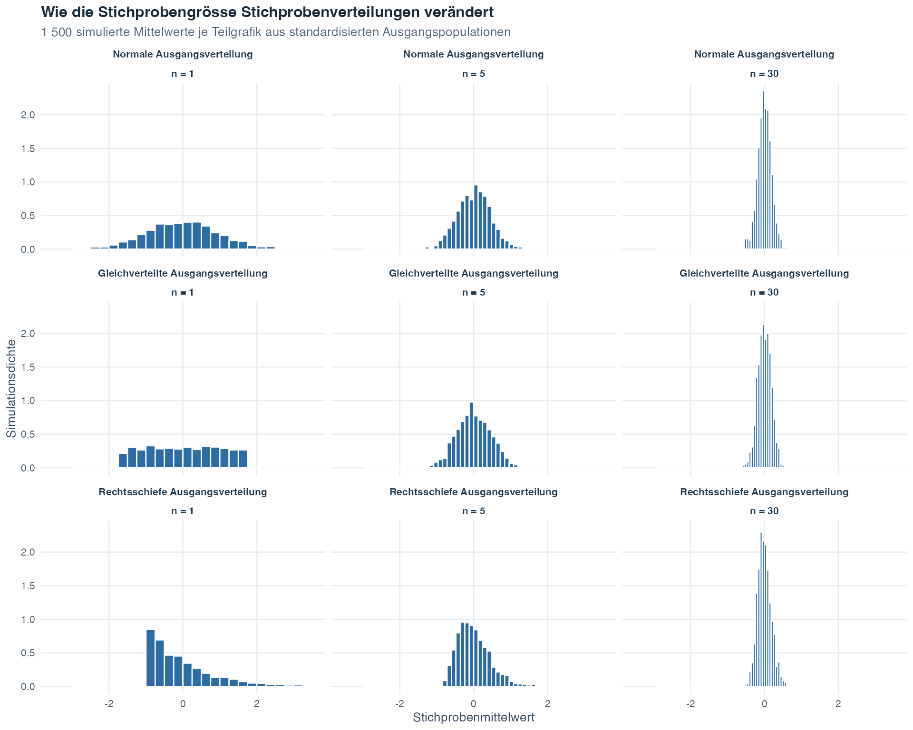
Jede Zeile beginnt mit einer anderen Form der Grundgesamtheit. Lies von links nach rechts, während die Stichprobengrösse von 1 über 5 auf 30 steigt. Alle Felder verwenden dieselbe horizontale und vertikale Skala. Deshalb lassen sich die Breiten der Verteilungen und die Höhen ihrer Dichtebalken direkt vergleichen. Bei \(n=1\) enthält jeder «Mittelwert» nur eine Beobachtung, weshalb die Stichprobenverteilung dieselbe Form wie die Grundgesamtheit hat. Mit wachsendem \(n\) streuen die Stichprobenmittelwerte weniger. Da die Gesamtfläche jeder Dichte immer 1 beträgt, werden die Balken im Zentrum zugleich höher, wenn die Verteilung schmaler wird. Die Zeile mit einer normalverteilten Grundgesamtheit bleibt durchgehend normalverteilt. Die gleichverteilten und rechtsschiefen Zeilen werden allmählich glockenförmiger. Dies veranschaulicht eine schrittweise Annäherung und keinen plötzlichen Grenzwert.
Thema 1 lehrte uns, einen beobachteten Datensatz zu beschreiben. Dieses Thema ergänzte eine zweite Ebene: ein Modell dafür, was sich verändern könnte, wenn ein Ereignis oder ein Stichprobenverfahren wiederholt würde. Ereignisregeln ordnen Unsicherheit, Wahrscheinlichkeitsverteilungen beschreiben zufällige numerische Ergebnisse und Stichprobenverteilungen zeigen, wie sich eine Statistik wie der Stichprobenmittelwert von Stichprobe zu Stichprobe verändert.
Diese letzte Verbindung öffnet den Weg zu Hypothesentests und Konfidenzintervallen. Ein Stichprobenmittelwert beschreibt eine Stichprobe, genau wie in Thema 1. Seine Stichprobenverteilung zeigt, wie stark dieser Mittelwert bei wiederholten Zufallsstichproben normalerweise variieren würde, und der Standardfehler fasst diese Variation zusammen. Thema 3 verwendet diese Grundlage, um zu beurteilen, ob ein beobachtetes Ergebnis unter einer festgelegten Hypothese überraschend ist, und um die Unsicherheit einer Schätzung für einen Populationswert auszudrücken.
Die Logik baut schrittweise aufeinander auf: Beschreibe zuerst die beobachteten Daten, formuliere danach das Wahrscheinlichkeitsmodell und schliesse nur dann von der Stichprobe auf die Grundgesamtheit, wenn Stichprobenverfahren und Modellannahmen diesen Schritt rechtfertigen. Wahrscheinlichkeit lässt Unsicherheit nicht verschwinden. Sie macht sie sichtbar und messbar.
Eine forschende Person möchte die Prüfungsangst unter Psychologiestudierenden im ersten Studienjahr untersuchen und Studierende in zwei selbstberichteten Stressgruppen vergleichen. Eine Kohorte ist eine Gruppe, die gemeinsam untersucht wird. Die Daten auf dieser Seite wurden vollständig vom Computer erzeugt. Keine reale Person wurde gemessen.
Wie die simulierte Studie in Thema 1 erklärte, folgt eine Simulation einem angegebenen Computerrezept, und ein fester Startwert ermöglicht allen, dieselben künstlichen Daten erneut zu erzeugen. Diese Seite verwendet denselben Aufbau. Ihre 160 Fälle, Tabellen, Abbildungen und Berechnungen bleiben deshalb bei jedem Neuaufbau konsistent.
Von Anfang an müssen zwei Arten von Zahlen getrennt werden. Das Rezept enthält Wahrscheinlichkeiten und Verteilungseinstellungen, die vor der Erzeugung der Fälle festgelegt wurden. Die fertige künstliche Kohorte enthält die tatsächlich entstandenen Häufigkeiten und relativen Häufigkeiten. Diese erzeugten Werte liegen normalerweise nahe bei den Rezeptwerten, müssen ihnen aber nicht genau entsprechen. Diese Kohorte enthält nur 160 zufallsähnliche Ergebnisse und nicht jedes Ergebnis, das das Rezept erzeugen könnte.
Stell dir zunächst vor, dass eine Zeile zufällig aus dieser festen künstlichen Kohorte ausgewählt wird. Wie wahrscheinlich ist ein Ergebnis mit hoher Prüfungsangst, und wie verändert sich diese Wahrscheinlichkeit, sobald die Stressgruppe des ausgewählten Falls bekannt ist? Das ist die zentrale Frage der Kohortenanalyse. Die späteren Veranschaulichungen mit wiederholten Stichproben erweitern den Rahmen und werden gesondert gekennzeichnet.
Das Rezept besteht aus drei Teilen:
Jede Zeile enthält vier nützliche Variablen. Die Teilnehmenden-ID identifiziert die Zeile, ist aber keine gemessene Grösse. Die Stressgruppe ist kategorial, weil sie eine Gruppenbezeichnung und keine Menge erfasst. Obwohl die Wörter «niedrig» und «hoch» im Alltag eine Reihenfolge besitzen, verwendet dieses Beispiel sie als zwei nominale Gruppierungskategorien. Die Bezeichnungen trennen die Fälle in zwei Gruppen, und wir rechnen mit den Gruppencodes nicht so, als wären sie gemessene Stresswerte. Die Prüfungsangst ist quantitativ, weil sie einen numerischen Wert erfasst. Wir behandeln Wertdifferenzen als sinnvoll, behaupten aber nicht, dass ein Wert von 24 doppelt so viel Angst wie ein Wert von 12 darstellt. Das Angstniveau ist schliesslich binär kategorial: Es erfasst nur eine von zwei Möglichkeiten, einen Wert von mindestens 23 oder einen Wert unter 23.
Die Grenze bei 23 dient ausschliesslich dem Erlernen von Ereigniswahrscheinlichkeiten. Sie darf nicht zur Diagnose oder gesundheitlichen Klassifikation einer Person verwendet werden. Die Simulation weist der Gruppe mit hohem Stress absichtlich eine höhere Wertemitte zu. Wenn wir dieses Muster später finden, bestätigt es nur das Rezept und liefert keine Evidenz über reale Studierende.
Der erste Teil begleitet eine Kohorte von Ereignishäufigkeiten über Komplement, Addition, gemeinsame und bedingte Wahrscheinlichkeiten sowie Unabhängigkeit bis zur Binomialrechnung. Danach kehren wir zum stetigen Wertemodell zurück, bevor wir zu einer einfacheren Grundgesamtheit wechseln, die Stichprobenverteilungen isoliert. Ein letzter Vergleich trennt Zufallsstichproben von selektiver Teilnahme.
Drei Fragen verbinden diese Etappen:
Wenn sich die Formulierung von «Prüfungsangst» zu «Prüfungsangst unter der Bedingung von hohem Stress» verändert, welche Gruppe gehört dann in den Nenner? Wie beschreiben Wahrscheinlichkeitsmodelle Ergebnisse, die noch nicht beobachtet wurden? Weshalb kann eine grössere Zufallsstichprobe die Präzision verbessern, während eine grössere selektive Stichprobe weiterhin systematisch nicht repräsentativ sein kann?
Wenn du diese Fragen im Blick behältst, verwendest du nicht eine einzige Wahrscheinlichkeit so, als würde sie jede Art von Unsicherheit beantworten.
Schritt 1: Simulierte Zeilen prüfen
Beginne mit den Zeilen, bevor du Wahrscheinlichkeiten berechnest. Die Tabelle ist interaktiv: Du kannst sie durchsuchen, eine Spalte sortieren und durch ihre Seiten blättern.
Jede Zeile stellt einen simulierten Fall dar. Wenn du nach Prüfungsangst sortierst, werden die niedrigsten und höchsten beobachteten Werte sichtbar. Die Spalte zum Angstniveau zeigt die aus dem gerundeten Wert abgeleitete Kategorie. Ein Blick auf die Stressgruppenspalte bestätigt, dass beide Gruppen vorkommen. Weil das Rezept absichtlich einen höheren Mittelwert für die Gruppe mit hohem Stress verwendet, liegen viele ihrer Werte weiter oben auf der Skala.
Nun verwandeln wir diese Zeilen in Ereignishäufigkeiten und Anteile.
Schritt 2: Häufigkeiten in Ereigniswahrscheinlichkeiten umwandeln
Eine relative Häufigkeit ist die Häufigkeit eines Ereignisses geteilt durch die Gesamtzahl der Fälle. Wenn ein Fall gleichförmig aus dieser festen Kohorte ausgewählt wird, also jede Zeile dieselbe Auswahlchance besitzt, ist die relative Häufigkeit die exakte Wahrscheinlichkeit für das Ereignis:
\[\text{relative Häufigkeit von Ereignis }A=\frac{\text{Anzahl Fälle in }A}{160}.\]
In diesem Lehrbeispiel gehört ein Wert von mindestens 23 zum Ereignis «hohe Prüfungsangst», ein Wert unter 23 zum Gegenteil «niedrige Prüfungsangst».
| Ereignis | Anzahl | Wahrscheinlichkeit (relative Häufigkeit) |
|---|---|---|
| Hohe Prüfungsangst (Wert >= 23) | 67 | 0.419 |
| Niedrige Prüfungsangst (Wert < 23) | 93 | 0.581 |
| Gruppe mit hohem Stress | 84 | 0.525 |
| Gruppe mit niedrigem Stress | 76 | 0.475 |
Die Wahrscheinlichkeit, dass ein zufällig ausgewählter simulierter Fall hohe Prüfungsangst besitzt, ist genau 67/160 und nach Rundung der dargestellten Dezimalzahl ungefähr 0.419. Die Wahrscheinlichkeit, einen Fall aus der Gruppe mit hohem Stress auszuwählen, ist 84/160 \(=\) 0.525. Das Rezept ordnete hohen Stress mit Wahrscheinlichkeit 0.45 zu, diese eine erzeugte Kohorte enthält jedoch 52.5% Fälle mit hohem Stress. Dieser Unterschied ist Simulationsvariabilität, also der gewöhnliche Zufallsunterschied zwischen einer erzeugenden Wahrscheinlichkeit und einer endlichen Menge erzeugter Ergebnisse. Die Werte sind exakte Wahrscheinlichkeiten für diese feste künstliche Kohorte und keine Schätzungen aus realen Studierenden.
Mit diesen Ereigniswahrscheinlichkeiten können wir nach «nicht» und «oder» fragen.
Schritt 3: Komplement- und Additionsregel anwenden
Die Komplementregel beantwortet eine «nicht»-Frage. Weil niedrige Prüfungsangst hier als nicht hohe Prüfungsangst definiert ist, decken die beiden Ereignisse alle 160 Fälle ohne Überlappung ab:
\[P(\text{niedrige Prüfungsangst}) = 1 - P(\text{hohe Prüfungsangst}) = \frac{93}{160} \approx 0.581\]
Ungefähr 58.1% der simulierten Fälle liegen im Bereich niedriger Prüfungsangst.
Die Additionsregel beantwortet eine «oder»-Frage. Sei \(H_S\) hoher Stress und \(H_A\) hohe Prüfungsangst. Die Vereinigung \(H_S\cup H_A\) enthält Fälle mit hohem Stress, hoher Prüfungsangst oder beidem:
\[P(H_S \cup H_A)=\frac{84+67-53}{160}=0.6125.\]
Die Addition der ersten beiden Häufigkeiten zählt die 53 Fälle, die zu beiden Ereignissen gehören, doppelt. Durch einmaliges Subtrahieren dieser gemeinsamen Häufigkeit wird die Doppelzählung korrigiert. Die Vereinigung enthält ungefähr 61.3% der Kohorte.
Schritt 4: Eine gemeinsame Wahrscheinlichkeit bestimmen
Nun wechseln wir von «oder» zu «und». Eine gemeinsame Wahrscheinlichkeit beschreibt das gleichzeitige Eintreten zweier Ereignisse. Die Tabelle zeigt jede Kombination von Stressgruppe und Angstkategorie. Eine Tabelle, die Fälle anhand zweier kategorialer Variablen kreuzklassifiziert, heisst zweidimensionale Häufigkeitstabelle. Die Summen am Ende jeder Zeile und Spalte zeigen, wie sich die 160 Fälle verteilen.
| Gruppe | Hohe Prüfungsangst | Niedrige Prüfungsangst | Gesamt |
|---|---|---|---|
| Hoher Stress | 53 | 31 | 84 |
| Niedriger Stress | 14 | 62 | 76 |
Die gemeinsame Wahrscheinlichkeit ist:
\[P(\text{hohe Prüfungsangst} \cap \text{hoher Stress}) = \frac{53}{160} \approx 0.331\]
Der Nenner umfasst weiterhin alle 160 Fälle, weil noch keine Bedingung die Bezugsgruppe eingeschränkt hat. Ungefähr 33.1% der Kohorte gehören zu beiden Ereignissen.
Die nächste Frage liefert zusätzliche Information über den ausgewählten Fall. Deshalb muss sich der Nenner ändern.
Schritt 5: Bezugsgruppe mit bedingter Wahrscheinlichkeit einschränken
Eine bedingte Wahrscheinlichkeit verändert den Nenner. Sobald wir wissen, dass ein Fall zur Gruppe mit hohem Stress gehört, bleiben nur die 84 Fälle mit hohem Stress in der Bezugsgruppe. Davon weisen 53 auch hohe Prüfungsangst auf:
\[P(\text{hohe Prüfungsangst} \mid \text{hoher Stress}) = \frac{53}{84} \approx 0.631\]
| Gruppe | P(hohe Prüfungsangst | Gruppe) | P(niedrige Prüfungsangst | Gruppe) |
|---|---|---|
| Hoher Stress | 0.631 | 0.369 |
| Niedriger Stress | 0.184 | 0.816 |
Innerhalb der Gruppe mit hohem Stress weisen 63.1% der Fälle hohe Prüfungsangst auf. Innerhalb der Gruppe mit niedrigem Stress sind es 18.4%. Die Balken zeigen dieselben beiden zeilenbezogenen Anteile wie die Tabelle.
Die umgekehrte Bedingung stellt eine andere Frage: Welcher Anteil der Fälle mit hoher Prüfungsangst gehört zur Gruppe mit hohem Stress? Direkt aus der Tabelle beträgt er 53/67 \(\approx\) 0.791. Der Satz von Bayes liefert denselben Wert:
\[ \begin{aligned} P(H_S\mid H_A) &=\frac{P(H_A\mid H_S)P(H_S)}{P(H_A)}\\ &=\frac{(53/84)(84/160)}{67/160}\\ &\approx 0.791. \end{aligned} \]
Die Richtung der Bedingung bestimmt den Nenner. Die erste bedingte Wahrscheinlichkeit verwendet alle Fälle mit hohem Stress. Die umgekehrte bedingte Wahrscheinlichkeit verwendet alle Fälle mit hoher Prüfungsangst. Obwohl beide dieselbe Tabelle verwenden, beantworten sie unterschiedliche Fragen.
Mit diesen bedingten Werten können wir nun prüfen, ob die beiden Ereignisse in der simulierten Kohorte unabhängig sind.
Schritt 6: Unabhängigkeit innerhalb der simulierten Kohorte prüfen
Zwei Ereignisse sind unabhängig, wenn die Kenntnis des einen Ereignisses die Wahrscheinlichkeit des anderen nicht verändert. Wir können diese Idee auf zwei gleichwertige Arten prüfen.
Vergleiche zuerst die allgemeine oder marginale Wahrscheinlichkeit hoher Prüfungsangst mit den bedingten Wahrscheinlichkeiten. Marginal bedeutet, dass keine Stressgruppe als Bedingung vorgegeben wurde:
Die bedingten Wahrscheinlichkeiten unterscheiden sich von der marginalen Wahrscheinlichkeit. Alternativ können wir das bei Unabhängigkeit verlangte Produkt mit der beobachteten gemeinsamen Wahrscheinlichkeit vergleichen:
\[P(H_A)P(H_S)=0.419\times0.525\approx0.22,\]
während \(P(H_A\cap H_S)\approx0.331\) gilt. Die Werte sind nicht gleich. Hoher Stress und hohe Prüfungsangst sind innerhalb dieser simulierten Kohorte deshalb nicht unabhängig. Das ist zu erwarten, weil das Simulationsrezept für die beiden Stressgruppen absichtlich unterschiedliche Wertemitten verwendet.
Alle bisherigen Berechnungen behandelten den Angstwert als Ereignis mit zwei Kategorien. Nun zählen wir, wie häufig dieses Ereignis bei einer festen Anzahl unabhängiger Ziehungen auftritt.
Schritt 7: Fälle mit hoher Prüfungsangst in einem Binomialmodell zählen
Nun stellen wir eine neue Frage: Wenn derselbe Vorgang mit zwei Ergebnissen 10-mal wiederholt würde, wie viele Ergebnisse mit hoher Prüfungsangst könnten wir zählen? Für ein Binomialmodell muss jede Wiederholung mit derselben Wahrscheinlichkeit beginnen und darf keine andere Wiederholung beeinflussen.
Zuerst passen wir das Modell an. Das bedeutet, dass wir den Anteil hoher Prüfungsangst in der künstlichen Kohorte als Erfolgswahrscheinlichkeit des Modells verwenden. Danach ziehen wir 10-mal unabhängig aus diesem Modell. Du kannst dir dies als Ziehen mit Zurücklegen vorstellen: Wähle einen Fall aus, notiere, ob er hohe Prüfungsangst besitzt, lege ihn zurück und wähle erst danach erneut. Das Zurücklegen hält die mögliche Auswahlmenge und die Erfolgswahrscheinlichkeit konstant. Dies ist ein Wahrscheinlichkeitsexperiment und keine Behauptung über zehn verschiedene Personen, die aus einer realen Kohorte entfernt werden.
Wir verwenden den Kohortenanteil
\[\widehat{\pi}=\frac{67}{160}\approx0.4188.\]
Das Dach über \(\widehat{\pi}\) erinnert daran, dass diese Wahrscheinlichkeit aus der künstlichen Kohorte stammt. In den Schritten 2 bis 6 beschrieb derselbe Bruch die Auswahl aus den festen 160 Zeilen. Hier wird er zur Erfolgswahrscheinlichkeit eines Modells für neue Wiederholungen. Sei \(X\) die Anzahl Ziehungen unter den 10 unabhängigen Ziehungen, bei denen hohe Prüfungsangst auftritt. Unter den angegebenen Annahmen gilt
\[X\sim B\!\left(10,\frac{67}{160}\right).\]
Die erwartete Anzahl ist
\[E(X) = n\hat{\pi} = 10 \times \frac{67}{160} = 4.1875.\]
Die Varianz beträgt \(n\widehat{\pi}(1-\widehat{\pi})\approx2.434\), und ihre Quadratwurzel ergibt die Standardabweichung \(\text{SD}(X)\approx1.56\).
Das Diagramm zeigt die vollständige Wahrscheinlichkeitsverteilung, also die Wahrscheinlichkeit jeder möglichen Anzahl von 0 bis 10. Die Wahrscheinlichkeit für genau 4 Ergebnisse mit hoher Prüfungsangst unter 10 unabhängigen Ziehungen beträgt \(P(X = 4) \approx 0.249\). Die Wahrscheinlichkeit für mehr als 5 beträgt \(P(X > 5) \approx 0.199\).
Lies die horizontale Achse als Anzahl und nicht als Angstwert. Eine Säule über 4 zeigt die Wahrscheinlichkeit, dass genau vier der 10 Modellziehungen als hohe Prüfungsangst klassifiziert werden. Gemeinsam enthalten die Säulen jede mögliche Anzahl, weshalb sich ihre Wahrscheinlichkeiten zu 1 summieren. Die höchsten Säulen kennzeichnen die Anzahlen, die unter der angepassten Wahrscheinlichkeit am plausibelsten sind. Sie sagen kein einzelnes Ergebnis mit Sicherheit voraus.
| Anzahl x | P(X = x) | F(x) = P(X <= x) |
|---|---|---|
| 0 | 0.0044 | 0.0044 |
| 1 | 0.0317 | 0.0361 |
| 2 | 0.1028 | 0.1389 |
| 3 | 0.1975 | 0.3364 |
| 4 | 0.2490 | 0.5854 |
| 5 | 0.2153 | 0.8007 |
| 6 | 0.1292 | 0.9300 |
| 7 | 0.0532 | 0.9832 |
| 8 | 0.0144 | 0.9975 |
| 9 | 0.0023 | 0.9998 |
| 10 | 0.0002 | 1.0000 |
Lies die mittlere Spalte für eine exakte Anzahl und die rechte Spalte für eine «Höchstens»-Frage. Der kumulative Eintrag bei 5 ist beispielsweise \(P(X\leq5)\), weshalb sein Komplement \(P(X>5)\) ist. Der letzte kumulative Wert ist 1, weil jede mögliche Anzahl enthalten ist.
Hier liegt \(\widehat{\pi}\approx0.419\) unter 0.50, weshalb die Säulen nicht vollkommen symmetrisch sind. Die Verteilung weist kleineren Anzahlen mehr Wahrscheinlichkeit zu, als dies bei einer Erfolgswahrscheinlichkeit von 0.50 der Fall wäre.
Die binomiale Zufallsvariable ist eine Anzahl, die aus dem Ergebnis mit zwei Kategorien entsteht. Nun kehren wir zum vollständigen quantitativen Wert und zum stetigen Modell zurück, das ihn vor dem Runden erzeugte.
Schritt 8: Ein Normalmodell für den vollständigen Wert verwenden
Das Rezept zur Datenerzeugung verwendet für jede Stressgruppe eine eigene Normalverteilung. Konzentriere dich auf das stetige Modell der Gruppe mit hohem Stress, bevor die Werte gerundet werden. Stetig bedeutet, dass ein Wert im Modell an jeder Stelle eines Intervalls der Punkteskala liegen kann und nicht nur an getrennten ganzzahligen Punkten. Sei \(X\) ein Wert aus diesem Modell:
\[X\sim N(24,5^2).\]
Diese Notation besagt, dass das Modell den Mittelwert 24, die Standardabweichung 5 und die Varianz \(5^2=25\) besitzt. Ein Modell ist eine vereinfachte Wahrscheinlichkeitsbeschreibung möglicher Werte. Das aufgezeichnete binäre Ereignis verwendet den gerundeten Wert: Hohe Prüfungsangst bedeutet einen gerundeten Wert von mindestens 23. Nach der bei der Datenerzeugung verwendeten Rundungsregel werden stetige Werte über 22.5 auf 23 oder höher gerundet. Das passende Ereignis im stetigen Modell ist deshalb \(X>22.5\) und nicht \(X\geq23\).
Um diese Wahrscheinlichkeit zu bestimmen, wandeln wir die stetige Grenze zuerst in einen z-Wert um. Ein z-Wert gibt an, wie viele Standardabweichungen ein Wert über oder unter dem Mittelwert liegt:
\[z=\frac{22.5-24}{5}=-0.30.\]
Sei \(Z\) die Standardnormalverteilung mit Mittelwert 0 und Standardabweichung 1. Dann gilt
\[P(X>22.5)=P(Z>-0.30)\approx 0.618.\]
Bei einem stetigen Modell ist die Wahrscheinlichkeit, genau 22.5 zu erhalten, null. Daher gilt \(P(X>22.5)=P(X\geq22.5)\), obwohl die Rundungsanweisung den Grenzwert selbst gesondert behandelt.
Die markierte Region ist die Fläche, nach der die Wahrscheinlichkeitsfrage sucht. Ihre Wahrscheinlichkeit von ungefähr 0.618 beschreibt eine neue Ziehung aus dem stetigen Generator der Gruppe mit hohem Stress vor dem Runden. Zum Vergleich enthält die feste simulierte Kohorte 53 Fälle mit hoher Prüfungsangst unter 84 tatsächlich entstandenen Fällen mit hohem Stress. Eine gleichförmige Auswahl innerhalb dieser Teilgruppe ergibt 53/84 \(\approx0.631\). Der kleine Unterschied ist endliche Simulationsvariabilität: Eine einzelne erzeugte Kohorte muss ihrer Generatorwahrscheinlichkeit nicht exakt entsprechen.
Dies ist eine Vorwärtsfrage, weil die Grenze 22.5 bekannt und die Fläche unbekannt ist. Die Kurve wird über acht Standardabweichungen dargestellt, weshalb ihre nicht sichtbaren Randbereiche äusserst klein sind. Das Normalmodell selbst besitzt keine harte Endgrenze.
Eine Umkehrfrage beginnt mit einer Fläche und sucht ihre Grenze. Die standardnormalverteilte Grenze, unter der 90% der Fläche liegen, ist ungefähr \(z=1.28\). Die Rücktransformation auf die Angstskala ergibt
\[x_{0.90}=24+1.28(5)\approx 30.4.\]
Das Modell legt somit ungefähr 90% seiner stetigen Werte für die Gruppe mit hohem Stress bei oder unter 30.4 und ungefähr 10% darüber. Dies ist eine Grenze im Lehrmodell vor dem Runden und darf nicht zur gesundheitlichen Klassifikation einer Person verwendet werden.
Der Binomialabschnitt untersuchte eine Anzahl, der Normalverteilungsabschnitt einen einzelnen stetigen Wert. Als Nächstes betrachten wir eine dritte Zufallsgrösse: einen Mittelwert, der aus einer ganzen Stichprobe berechnet wird.
Schritt 9: Eine Stichprobenverteilung des Mittelwerts aufbauen
Um die Idee der Stichprobenverteilung zu isolieren, verwendet dieser Schritt eine einfachere vorgestellte Grundgesamtheit. Die einzelnen Werte in dieser Grundgesamtheit folgen
\[X\sim N(20,6^2).\]
Der Mittelwert der Grundgesamtheit ist somit 20, ihre Standardabweichung 6. Jede Wiederholung folgt denselben drei Schritten:
Die Verteilung der gesammelten Mittelwerte ist die Stichprobenverteilung des Mittelwerts. Weil die Grundgesamtheit selbst normalverteilt ist, ist diese Stichprobenverteilung bei der angegebenen Stichprobengrösse normalverteilt:
\[\bar{X}\sim N\!\left(20,\frac{6^2}{30}\right).\]
Ihre Standardabweichung ist der Standardfehler. Er beschreibt in diesem wiederholten Zufallsstichprobenprozess die typische Streuung der Mittelwerte von Stichprobe zu Stichprobe um den Mittelwert der Grundgesamtheit:
\[\text{SE}=\frac{6}{\sqrt{30}}\approx1.1.\]
Die Simulation ergab einen Mittelwert der Mittelwerte von 19.94 und eine Standardabweichung der Mittelwerte von 1.12. Diese Werte liegen nahe bei der theoretischen Mitte 20 und dem Standardfehler 1.1. Die kleinen Unterschiede entstehen, weil die Abbildung 1 000 simulierte Stichproben und nicht jede mögliche Stichprobe enthält.
| Stichprobengrösse | Standardfehler |
|---|---|
| 10 | 1.897 |
| 30 | 1.095 |
| 90 | 0.632 |
Die Tabelle hält die Populationsstandardabweichung bei 6 fest und verändert nur \(n\). Eine Erhöhung der Stichprobengrösse von 10 auf 90 multipliziert \(n\) mit neun. Weil \(\sqrt{9}=3\) gilt, wird der Standardfehler durch drei geteilt.
Einzelne Werte besitzen die Standardabweichung 6, die Stichprobenmittelwerte bei \(n=30\) dagegen nur einen Standardfehler von ungefähr 1.1. Mittelwerte variieren weniger als einzelne Beobachtungen, weil jeder Mittelwert 30 Werte verbindet.
Der schrumpfende Standardfehler hängt vom angegebenen Zufallsstichprobenmodell ab. Ein letzter Vergleich zeigt, weshalb Präzision und repräsentative Auswahl unterschiedliche Fragen sind.
Schritt 10: Zufallsstichprobe und selektive Teilnahme vergleichen
Die beabsichtigte Grundgesamtheit ist die vollständige Gruppe, die in der Forschungsfrage genannt wird. Für diese letzte Demonstration erzeugen wir eine künstliche Grundgesamtheit von 10 000 Interessenwerten. Daraus gewinnen wir zwei Stichproben derselben Grösse von jeweils 4373:
Der Mittelwert der Grundgesamtheit ist 50. Der Mittelwert der Zufallsstichprobe ist 50, also eine kleine zufällige Abweichung vom Ziel. Der Mittelwert der freiwillig Antwortenden ist 54 und liegt höher, weil die Teilnahme vom Interesse abhängt. Diese systematische Verschiebung ist Selektionsverzerrung: Die Art, wie Fälle in die Stichprobe gelangen, verschiebt das Ergebnis wiederholt vom Zielwert der Grundgesamtheit weg.
Eine grössere Stichprobe verringert die Zufallsvariation, wenn das Stichprobenverfahren geeignet ist. Sie repariert keinen Prozess, der bestimmte Werte wiederholt überrepräsentiert. Das vollständige Beispiel trennt deshalb drei Ideen: exakte Wahrscheinlichkeiten innerhalb einer festen Kohorte, Modellwahrscheinlichkeiten für neue unabhängige Ziehungen und Populationsschätzungen, deren Qualität davon abhängt, wie die Stichprobe ausgewählt wurde.
Die erzeugte Kohorte kann nicht stellvertretend für eine reale Grundgesamtheit stehen. Ihre Wahrscheinlichkeiten und Modellbestandteile wurden für Lehrzwecke konstruiert und sind deshalb keine Evidenz über reale Studierende. Eine grössere Stichprobe kann bei einem geeigneten Stichprobenverfahren die Zufallsvariation verringern. Sie kann aber weder selektive Teilnahme noch eine unvollständige Abdeckung der Zielpopulation beheben.
Die zehn Schritte bilden einen zusammenhängenden Weg. Wir begannen mit Zeilen, wandelten Häufigkeiten in Ereigniswahrscheinlichkeiten um, veränderten bei bedingten Fragen die Nenner und prüften Unabhängigkeit. Danach verwendeten wir dasselbe Ergebnis mit zwei Kategorien in einem binomialen Zählmodell, kehrten mit einem Normalmodell zum vollständigen Wert zurück und untersuchten schliesslich die Variation von Stichprobenmittelwerten. Der abschliessende Stichprobenvergleich zeigte, weshalb ein präziser Schätzwert dennoch systematisch falsch liegen kann, wenn Fälle durch einen selektiven Prozess in die Stichprobe gelangen.
Jedes numerische Muster wurde in dieses künstliche Beispiel eingebaut. Die Ergebnisse zeigen deshalb, dass die Berechnungen das angegebene Rezept wiederfinden. Sie zeigen weder, wie häufig Prüfungsangst unter realen Studierenden ist, noch dass Stress Angst verursacht oder dass eine Wertgrenze klinische Bedeutung besitzt. Eine reale Analyse benötigte eine begründete Zielpopulation, einen vertretbaren Auswahlrahmen, gültige Messungen und ein Untersuchungsdesign, das zur beabsichtigten Schlussfolgerung passt.
Die nützlichste Gewohnheit für den weiteren Weg ist, die Bezugsgruppe einer Wahrscheinlichkeit zu benennen. Frage dich: Wahrscheinlichkeit unter wem, unter welchem Prozess und über welche möglichen Ergebnisse? Diese Frage verhindert, dass Komplemente, bedingte Wahrscheinlichkeiten, Modellwahrscheinlichkeiten und Populationsschätzungen miteinander verwechselt werden.
Wähle PDF zum Drucken oder Word zum Bearbeiten.
Wähle PDF zum Drucken oder Word zum Bearbeiten.
Wahrscheinlichkeit ist die formale Sprache zur Quantifizierung der Unsicherheit. Die frequentistische Interpretation verwendet eine langfristige relative Häufigkeit, die klassische Definition gilt für gleichwahrscheinliche Ergebnisse und die subjektive Interpretation stellt einen Grad an Überzeugung dar.
Die Komplement-, Additions- und Multiplikationsregeln bilden ein konsistentes System zur Verknüpfung von Ereigniswahrscheinlichkeiten. Die bedingte Wahrscheinlichkeit und der Satz von Bayes beschreiben, wie Evidenz Wahrscheinlichkeiten verändert. Dies lässt sich unmittelbar auf diagnostische Tests und die Berücksichtigung von Basisraten anwenden.
Zufallsvariablen formalisieren numerische Ergebnisse. Diskrete Variablen werden durch Wahrscheinlichkeitsfunktionen beschrieben, stetige Variablen durch Dichtefunktionen, wobei Wahrscheinlichkeiten Flächen über Intervallen entsprechen. Die Binomial- und die Normalverteilung sind zwei wichtige Modelle. z-Werte verbinden eine Normalverteilung mit einer gemeinsamen Referenzskala.
Stichprobenverteilungen beschreiben, wie Statistiken über wiederholte Stichproben variieren. Der Standardfehler des Mittelwerts nimmt mit wachsender Stichprobengrösse ab. Bei Unabhängigkeit und endlicher Varianz kann der zentrale Grenzwertsatz für ausreichend grosse Stichproben eine Normalnäherung rechtfertigen. Wie gross dafür ausreichend ist, hängt von der Form der Grundgesamtheit und von der Analyse ab. Grössere Präzision garantiert zudem keine Repräsentativität, denn Unterabdeckung, Selbstselektion und Nichtantwort können selbst eine sehr grosse Stichprobe verzerren.
| Modell oder Berechnung | Was erfüllt sein muss | Praktische Prüfung |
|---|---|---|
| Klassische Wahrscheinlichkeit | Die aufgeführten Ergebnisse sind tatsächlich gleich wahrscheinlich | Begründe die Gleichwahrscheinlichkeit mit dem Design und nicht mit Bequemlichkeit |
| Bedingte Wahrscheinlichkeit | Das bedingende Ereignis besitzt eine positive Wahrscheinlichkeit | Nenne die eingeschränkte Gruppe und verwende ihre Grösse als Nenner |
| Binomialverteilung | Festes \(n\), zwei Ergebnisse pro Versuch, konstantes \(\pi\) und unabhängige Versuche | Prüfe das Design, bevor du die Formel anwendest |
| Normalmodell | Die modellierte Verteilung wird durch eine Normalkurve ausreichend gut angenähert | Prüfe Form, Grenzen, Mischungen und ungewöhnliche Beobachtungen |
| Standardfehler und zentraler Grenzwertsatz | Unabhängige Stichprobenziehung oder ein geeignetes Design, endliche Varianz und genügend Information für die Näherung | Untersuche den Stichprobenprozess und die Populationsform, nicht nur die Stichprobengrösse |
Du kannst gewöhnliche Fragen zur Unsicherheit in Ereignisnotation übersetzen, die passende Wahrscheinlichkeitsregel auswählen und anwenden, mit diskreten und stetigen Wahrscheinlichkeitsmodellen arbeiten, Normalwerte standardisieren und erklären, was Stichprobenverteilungen und Standardfehler über die Variation wiederholter Stichproben aussagen. Du kannst auch die Annahmen hinter diesen Werkzeugen nennen, erkennen, wann eine Rechnung nur eine Näherung ist, und erklären, weshalb eine präzise Schätzung durch die Art der Stichprobenauswahl trotzdem verzerrt sein kann.
| Begriff | Definition |
|---|---|
| Ergebnisraum (\(\Omega\)) | Menge aller möglichen Ergebnisse eines Zufallsexperiments |
| Ereignis (\(A\)) | Beliebige Teilmenge des Ergebnisraums |
| Komplement (\(A'\)) | Alle Ergebnisse in \(\Omega\), die nicht in \(A\) liegen |
| Klassische Wahrscheinlichkeit | \(P(A)=m/n\), wobei \(m\) die Anzahl günstiger Ergebnisse und \(n\) die Gesamtzahl gleich wahrscheinlicher Ergebnisse bezeichnet |
| Frequentistische Wahrscheinlichkeit | Langfristige relative Häufigkeit über viele Wiederholungen |
| Einander ausschliessend | Zwei Ereignisse, die nicht beide eintreten können (\(A \cap B = \emptyset\)) |
| Unabhängig | \(P(A \cap B) = P(A)P(B)\): Das Auftreten des einen ändert nicht die Wahrscheinlichkeit des anderen |
| Grundgesamtheit | Alle potenziell beobachtbaren Einheiten mit dem interessierenden Merkmal |
| Stichprobe | Eine aus der Grundgesamtheit gezogene Teilmenge |
| Einfache Zufallsstichprobe | Jede mögliche Stichprobe einer festen Grösse hat dieselbe Auswahlwahrscheinlichkeit |
| Auswahlrahmen | Die operative Liste oder der Mechanismus, über den Einheiten der Grundgesamtheit ausgewählt werden können |
| Parameter | Eine feste, gewöhnlich unbekannte Populationsgrösse wie \(\mu\) oder \(\pi\) |
| Statistik | Eine aus einer Stichprobe berechnete Grösse wie \(\bar{x}\) oder \(\hat{p}\), die zwischen Stichproben variiert |
| Auswahlverzerrung | Systematischer Fehler, wenn Einschluss oder Antwort mit der geschätzten Grösse zusammenhängt |
| Regel | Formel | Verwendung |
|---|---|---|
| Komplement | \(P(A') = 1 - P(A)\) | Berechnung der Wahrscheinlichkeit des gegenteiligen Ereignisses |
| Addition (disjunkt) | \(P(A \cup B) = P(A) + P(B)\) | Ereignisse können nicht gemeinsam eintreten |
| Addition (allgemein) | \(P(A \cup B) = P(A) + P(B) - P(A \cap B)\) | Ereignisse können gemeinsam eintreten |
| Viele disjunkte Ereignisse | \(P(A_1 \cup \cdots \cup A_k) = \sum P(A_i)\) | Alle Ereignispaare sind disjunkt |
| Bedingte Wahrscheinlichkeit | \(P(A \mid B) = P(A \cap B) / P(B)\) | Wahrscheinlichkeit von \(A\), wenn \(B\) eingetreten ist |
| Multiplikation (allgemein) | \(P(A \cap B) = P(A \mid B) \cdot P(B)\) | Ermittlung der gemeinsamen Wahrscheinlichkeit |
| Multiplikation (unabhängig) | \(P(A \cap B) = P(A) \cdot P(B)\) | Wenn Ereignisse unabhängig sind |
| Satz von Bayes | \(P(A \mid B) = \dfrac{P(B \mid A) \cdot P(A)}{P(B \mid A) \cdot P(A) + P(B \mid A') \cdot P(A')}\) | Aktualisierung der Wahrscheinlichkeit mit neuen Erkenntnissen |
| Diskret | Stetig | |
|---|---|---|
| Werte | Abzählbar (0, 1, 2, …) | Jeder Wert in einem Bereich |
| Beschrieben durch | Wahrscheinlichkeitsfunktion \(P(X = x)\) | Dichtefunktion \(f(x)\) |
| Erwartungswert | \(E(X) = \sum x \cdot P(X = x)\) | \(E(X) = \mu\) |
| Varianz | \(\text{Var}(X) = \sum (x - E(X))^2 \cdot P(X = x)\) | \(\text{Var}(X) = \sigma^2\) |
| CDF | \(F(x) = P(X \leq x)\), Summe bis \(x\) | \(F(x) = P(X \leq x)\), Fläche bis \(x\) |
| Zentrales Beispiel | Binomialverteilung \(B(n, \pi)\) | Normalverteilung \(N(\mu, \sigma^2)\) |
| Eigenschaft | Formel | Interpretation |
|---|---|---|
| Schreibweise | \(X \sim B(n, \pi)\) | \(n\) Versuche, Erfolgswahrscheinlichkeit \(\pi\) pro Versuch |
| Wahrscheinlichkeitsfunktion | \(P(X = x) = \binom{n}{x} \pi^x (1-\pi)^{n-x}\) | Wahrscheinlichkeit von genau \(x\) Erfolgen |
| Erwartungswert | \(E(X) = n\pi\) | Langfristige durchschnittliche Anzahl an Erfolgen |
| Varianz | \(\text{Var}(X) = n\pi(1-\pi)\) | Streuung der Verteilung |
| Symmetrisch nur, wenn | \(\pi = 0.5\) | Ansonsten schief |
| Eigenschaft | Formel oder Wert | Interpretation |
|---|---|---|
| Normalverteilung | \(X \sim N(\mu, \sigma^2)\) | Gekennzeichnet durch Mittelwert und Varianz |
| Empirische Regel: \(\mu \pm \sigma\) | \(\approx 68\%\) | Die meisten Werte liegen in der Nähe der Mitte |
| Empirische Regel: \(\mu \pm 2\sigma\) | \(\approx 95\%\) | Sehr wenige Werte liegen mehr als zwei Standardabweichungen entfernt |
| Empirische Regel: \(\mu \pm 3\sigma\) | \(\approx 99.7\%\) | Extremwerte sind sehr selten |
| z-Wert | \(z = (x - \mu) / \sigma\) | Standardisierter Abstand vom Mittelwert |
| Standardnormalverteilung | \(Z \sim N(0, 1)\) | Referenz nach der z-Transformation |
| Standardfehler | \(\text{SE} = \sigma / \sqrt{n}\) | Präzision des Stichprobenmittelwerts |
| Zentraler Grenzwertsatz | \(\bar{X} \approx N(\mu, \sigma^2/n)\) für grosse \(n\) | Stichprobenmittelwerte sind annähernd normalverteilt |